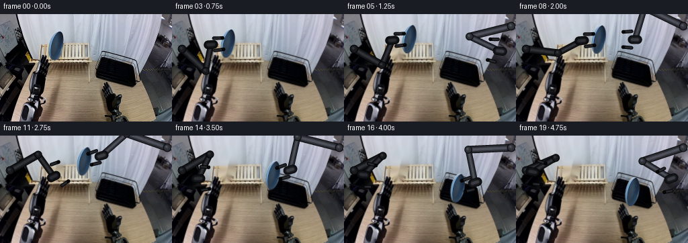
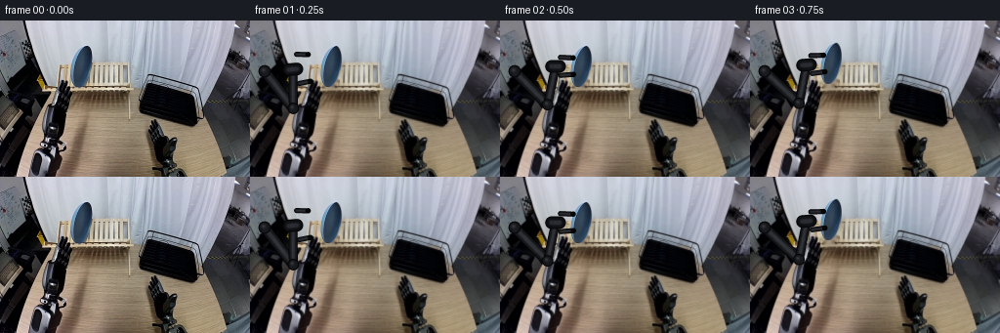
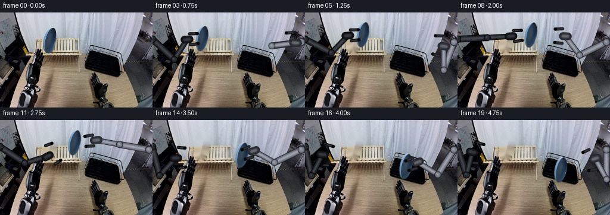
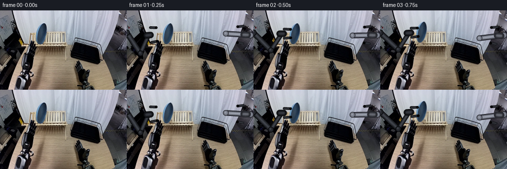

CODING AGENTS AS PIXEL WORLD MODELS
traex/DeepSeek-V4.1-Flash · common50_0035
点击播放 · 原生 RGB 像素
逐轮保存的候选
回放视频、检查图与代码变化。
每份候选均可单独播放。实际图片检查记录在下方工具轨迹中。
候选 01播放与检查图
点击播放 · 原生 RGB 像素

展开代码变化
--- 上一保存版本
+++ 本次保存版本
@@ -0,0 +1,565 @@
+from __future__ import annotations
+
+import math
+from pathlib import Path
+
+import cv2
+import numpy as np
+from PIL import Image
+
+import artifact_io
+
+
+WIDTH = 256
+HEIGHT = 160
+FRAMES = 20
+FPS = 4
+SCALE = 4
+HR_WIDTH = WIDTH * SCALE
+HR_HEIGHT = HEIGHT * SCALE
+
+
+def lerp(a: float, b: float, t: float) -> float:
+ return a + (b - a) * t
+
+
+def lerp_point(a: tuple[float, float], b: tuple[float, float], t: float) -> tuple[float, float]:
+ return lerp(a[0], b[0], t), lerp(a[1], b[1], t)
+
+
+def smoothstep(t: float) -> float:
+ t = float(np.clip(t, 0.0, 1.0))
+ return t * t * (3.0 - 2.0 * t)
+
+
+def sample_keys(frame: int, keys: dict[int, tuple[float, float]]) -> tuple[float, float]:
+ if frame <= min(keys):
+ return keys[min(keys)]
+ if frame >= max(keys):
+ return keys[max(keys)]
+ left = max(k for k in keys if k <= frame)
+ right = min(k for k in keys if k >= frame)
+ if left == right:
+ return keys[left]
+ t = smoothstep((frame - left) / (right - left))
+ return lerp_point(keys[left], keys[right], t)
+
+
+def sample_scalar(frame: int, keys: dict[int, float]) -> float:
+ if frame <= min(keys):
+ return keys[min(keys)]
+ if frame >= max(keys):
+ return keys[max(keys)]
+ left = max(k for k in keys if k <= frame)
+ right = min(k for k in keys if k >= frame)
+ if left == right:
+ return keys[left]
+ t = smoothstep((frame - left) / (right - left))
+ return lerp(keys[left], keys[right], t)
+
+
+def normalize(v: np.ndarray) -> np.ndarray:
+ length = float(np.linalg.norm(v))
+ if length < 1e-6:
+ return np.array([1.0, 0.0], dtype=np.float32)
+ return v.astype(np.float32) / length
+
+
+def solve_ik(
+ shoulder: tuple[float, float],
+ wrist: tuple[float, float],
+ upper_length: float,
+ lower_length: float,
+ prefer_inward: bool = True,
+) -> tuple[tuple[float, float], tuple[float, float]]:
+ """Return a constrained two-link elbow and the reachable wrist."""
+ s = np.asarray(shoulder, dtype=np.float32)
+ requested = np.asarray(wrist, dtype=np.float32)
+ delta = requested - s
+ distance = float(np.linalg.norm(delta))
+ direction = normalize(delta)
+
+ minimum = abs(upper_length - lower_length) + 1e-3
+ maximum = upper_length + lower_length - 1e-3
+ reach = float(np.clip(distance, minimum, maximum))
+ solved_wrist = s + direction * reach
+
+ along = (upper_length**2 - lower_length**2 + reach**2) / (2.0 * reach)
+ height = math.sqrt(max(upper_length**2 - along**2, 0.0))
+ midpoint = s + direction * along
+ perpendicular = np.array([-direction[1], direction[0]], dtype=np.float32)
+ candidates = [midpoint + perpendicular * height, midpoint - perpendicular * height]
+ if prefer_inward:
+ elbow = min(candidates, key=lambda p: abs(float(p[0]) - 128.0))
+ else:
+ elbow = max(candidates, key=lambda p: abs(float(p[0]) - 128.0))
+ return (float(elbow[0]), float(elbow[1])), (float(solved_wrist[0]), float(solved_wrist[1]))
+
+
+def make_noise() -> np.ndarray:
+ rng = np.random.default_rng(2417)
+ coarse = rng.normal(0.0, 1.0, (HEIGHT, WIDTH)).astype(np.float32)
+ coarse = cv2.GaussianBlur(coarse, (0, 0), 1.25)
+ fine = rng.normal(0.0, 1.0, (HR_HEIGHT, HR_WIDTH)).astype(np.float32)
+ fine = cv2.GaussianBlur(fine, (0, 0), 0.75)
+ fine /= max(float(fine.std()), 1e-5)
+ coarse_up = cv2.resize(coarse, (HR_WIDTH, HR_HEIGHT), interpolation=cv2.INTER_CUBIC)
+ coarse_up /= max(float(coarse_up.std()), 1e-5)
+ return 0.65 * fine + 0.35 * coarse_up
+
+
+ARM_NOISE = make_noise()
+
+
+def new_arm_layer() -> tuple[np.ndarray, np.ndarray]:
+ return (
+ np.zeros((HR_HEIGHT, HR_WIDTH, 3), dtype=np.float32),
+ np.zeros((HR_HEIGHT, HR_WIDTH), dtype=np.float32),
+ )
+
+
+def capsule_geometry(
+ p0: tuple[float, float],
+ p1: tuple[float, float],
+ width: float,
+) -> tuple[slice, slice, np.ndarray, np.ndarray, np.ndarray]:
+ a = np.asarray(p0, dtype=np.float32) * SCALE
+ b = np.asarray(p1, dtype=np.float32) * SCALE
+ radius = width * SCALE * 0.5
+ pad = int(math.ceil(radius + 4 * SCALE))
+ x0 = max(0, int(math.floor(min(a[0], b[0]))) - pad)
+ x1 = min(HR_WIDTH, int(math.ceil(max(a[0], b[0]))) + pad + 1)
+ y0 = max(0, int(math.floor(min(a[1], b[1]))) - pad)
+ y1 = min(HR_HEIGHT, int(math.ceil(max(a[1], b[1]))) + pad + 1)
+ yy, xx = np.mgrid[y0:y1, x0:x1]
+ points = np.stack((xx + 0.5, yy + 0.5), axis=-1)
+ segment = b - a
+ length_sq = max(float(np.dot(segment, segment)), 1e-6)
+ t = np.sum((points - a) * segment, axis=-1) / length_sq
+ tc = np.clip(t, 0.0, 1.0)
+ closest = a + tc[..., None] * segment
+ distance = np.linalg.norm(points - closest, axis=-1)
+ cross = np.abs((points[..., 0] - a[0]) * segment[1] - (points[..., 1] - a[1]) * segment[0])
+ signed = cross / math.sqrt(length_sq)
+ return slice(y0, y1), slice(x0, x1), distance, t, signed
+
+
+def draw_capsule(
+ layer: tuple[np.ndarray, np.ndarray],
+ p0: tuple[float, float],
+ p1: tuple[float, float],
+ width: float,
+ base: tuple[float, float, float],
+ edge: tuple[float, float, float],
+ highlight: tuple[float, float, float],
+ alpha: float = 1.0,
+ outline: float = 1.15,
+ highlight_strength: float = 1.0,
+) -> None:
+ rgb, layer_alpha = layer
+ ys, xs, distance, t, _ = capsule_geometry(p0, p1, width + 2.0 * outline)
+ radius = width * SCALE * 0.5
+ outline_radius = radius + outline * SCALE
+ outer = distance <= outline_radius
+ inner = distance <= radius
+ if not np.any(outer):
+ return
+
+ rgb_crop = rgb[ys, xs]
+ alpha_crop = layer_alpha[ys, xs]
+ noise = ARM_NOISE[ys, xs]
+
+ rgb_crop[outer] = np.asarray(edge, dtype=np.float32)
+ alpha_crop[outer] = np.maximum(alpha_crop[outer], alpha)
+
+ radial = np.clip(distance / max(radius, 1.0), 0.0, 1.35)
+ body = np.asarray(base, dtype=np.float32)
+ specular = np.asarray(highlight, dtype=np.float32)
+ center_glow = np.exp(-((radial - 0.18) / 0.28) ** 2)
+ side_falloff = 0.70 + 0.30 * np.clip(1.0 - radial, 0.0, 1.0)
+ longitudinal = 0.94 + 0.06 * np.sin(t * math.pi)
+ shaded = body[None, None, :] * (side_falloff[..., None] * longitudinal[..., None])
+ shaded += (
+ (specular - body)[None, None, :]
+ * (0.30 * highlight_strength * center_glow[..., None])
+ )
+ shaded += noise[..., None] * np.array([3.1, 3.3, 3.8], dtype=np.float32)
+ shaded = np.clip(shaded, 0.0, 255.0).astype(np.float32)
+ rgb_crop[inner] = shaded[inner]
+ alpha_crop[inner] = np.maximum(alpha_crop[inner], alpha)
+
+
+def draw_disc(
+ layer: tuple[np.ndarray, np.ndarray],
+ center: tuple[float, float],
+ radius: float,
+ base: tuple[float, float, float],
+ edge: tuple[float, float, float],
+ highlight: tuple[float, float, float],
+ alpha: float = 1.0,
+) -> None:
+ rgb, layer_alpha = layer
+ c = np.asarray(center, dtype=np.float32) * SCALE
+ r = radius * SCALE
+ pad = int(math.ceil(r + 2 * SCALE))
+ x0 = max(0, int(math.floor(c[0])) - pad)
+ x1 = min(HR_WIDTH, int(math.ceil(c[0])) + pad + 1)
+ y0 = max(0, int(math.floor(c[1])) - pad)
+ y1 = min(HR_HEIGHT, int(math.ceil(c[1])) + pad + 1)
+ if x1 <= x0 or y1 <= y0:
+ return
+ yy, xx = np.mgrid[y0:y1, x0:x1]
+ points = np.stack((xx + 0.5, yy + 0.5), axis=-1)
+ delta = points - c
+ distance = np.linalg.norm(delta, axis=-1)
+ outer = distance <= r + 1.1 * SCALE
+ inner = distance <= r
+ if not np.any(outer):
+ return
+ rgb_crop = rgb[y0:y1, x0:x1]
+ alpha_crop = layer_alpha[y0:y1, x0:x1]
+ rgb_crop[outer] = np.asarray(edge, dtype=np.float32)
+ alpha_crop[outer] = np.maximum(alpha_crop[outer], alpha)
+ radial = np.clip(distance / max(r, 1.0), 0.0, 1.2)
+ light = np.exp(-(((delta[..., 0] + 0.25 * r) / (0.35 * r)) ** 2 + ((delta[..., 1] + 0.28 * r) / (0.35 * r)) ** 2))
+ shaded = np.asarray(base, dtype=np.float32)[None, None, :] * (0.74 + 0.26 * (1.0 - radial[..., None]))
+ shaded += (np.asarray(highlight, dtype=np.float32) - np.asarray(base, dtype=np.float32))[None, None, :] * (0.42 * light[..., None])
+ shaded += ARM_NOISE[y0:y1, x0:x1, None] * np.array([2.5, 2.6, 3.0], dtype=np.float32)
+ rgb_crop[inner] = np.clip(shaded[inner], 0.0, 255.0)
+ alpha_crop[inner] = np.maximum(alpha_crop[inner], alpha)
+
+
+def composite_hr(frame: np.ndarray, layer: tuple[np.ndarray, np.ndarray]) -> np.ndarray:
+ rgb, alpha = layer
+ alpha_small = cv2.resize(alpha, (WIDTH, HEIGHT), interpolation=cv2.INTER_AREA)
+ rgb_small = cv2.resize(rgb, (WIDTH, HEIGHT), interpolation=cv2.INTER_AREA)
+ a = np.clip(alpha_small, 0.0, 1.0)[..., None]
+ return frame.astype(np.float32) * (1.0 - a) + rgb_small * a
+
+
+def render_arm(
+ shoulder: tuple[float, float],
+ wrist_target: tuple[float, float],
+ upper_length: float,
+ lower_length: float,
+ plate_center: tuple[float, float],
+ openness: float,
+ side: str,
+ opacity: float,
+) -> tuple[tuple[np.ndarray, np.ndarray], tuple[np.ndarray, np.ndarray]]:
+ body = new_arm_layer()
+ fingers = new_arm_layer()
+ if opacity <= 0.01:
+ return body, fingers
+
+ elbow, wrist = solve_ik(shoulder, wrist_target, upper_length, lower_length, prefer_inward=True)
+ if side == "left":
+ base = (29.0, 30.0, 34.0)
+ edge = (5.0, 6.0, 8.0)
+ highlight = (105.0, 110.0, 122.0)
+ palm_base = (21.0, 22.0, 26.0)
+ else:
+ base = (55.0, 58.0, 66.0)
+ edge = (10.0, 11.0, 14.0)
+ highlight = (151.0, 156.0, 170.0)
+ palm_base = (27.0, 29.0, 34.0)
+
+ draw_capsule(body, shoulder, elbow, 9.2, base, edge, highlight, alpha=opacity, outline=1.05)
+ draw_capsule(body, elbow, wrist, 7.4, base, edge, highlight, alpha=opacity, outline=0.95)
+ draw_disc(body, shoulder, 5.3, base, edge, highlight, alpha=opacity)
+ draw_disc(body, elbow, 4.8, base, edge, highlight, alpha=opacity)
+ draw_disc(body, wrist, 4.1, palm_base, edge, highlight, alpha=opacity)
+
+ toward_plate = normalize(np.asarray(plate_center, dtype=np.float32) - np.asarray(wrist, dtype=np.float32))
+ perpendicular = np.array([-toward_plate[1], toward_plate[0]], dtype=np.float32)
+ wrist_v = np.asarray(wrist, dtype=np.float32)
+ palm_back = wrist_v - toward_plate * 4.2
+ palm_front = wrist_v + toward_plate * 4.0
+ draw_capsule(
+ body,
+ (float(palm_back[0]), float(palm_back[1])),
+ (float(palm_front[0]), float(palm_front[1])),
+ 11.0,
+ palm_base,
+ edge,
+ highlight,
+ alpha=opacity,
+ outline=1.0,
+ )
+
+ half_separation = 8.5 + 9.0 * float(np.clip(openness, 0.0, 1.0))
+ root = wrist_v + toward_plate * 5.0
+ tip = wrist_v + toward_plate * (15.5 + 2.0 * (1.0 - openness))
+ for sign in (-1.0, 1.0):
+ lateral = perpendicular * half_separation * sign
+ root_i = root + lateral
+ tip_i = tip + lateral * 0.92
+ draw_capsule(
+ fingers,
+ (float(root_i[0]), float(root_i[1])),
+ (float(tip_i[0]), float(tip_i[1])),
+ 3.7,
+ (28.0, 29.0, 33.0),
+ edge,
+ (115.0, 120.0, 132.0),
+ alpha=opacity,
+ outline=0.75,
+ highlight_strength=0.75,
+ )
+ pad_center = tip_i + toward_plate * 0.7
+ draw_disc(
+ fingers,
+ (float(pad_center[0]), float(pad_center[1])),
+ 1.65,
+ (7.0, 7.0, 8.0),
+ (2.0, 2.0, 3.0),
+ (35.0, 36.0, 41.0),
+ alpha=opacity,
+ )
+ return body, fingers
+
+
+def extract_plate(image: np.ndarray) -> tuple[np.ndarray, np.ndarray, tuple[float, float], tuple[float, float, float, float]]:
+ hsv = cv2.cvtColor(image, cv2.COLOR_RGB2HSV)
+ h, s, v = cv2.split(hsv)
+ blue = ((h >= 90) & (h <= 140) & (s >= 40) & (v >= 18)).astype(np.uint8)
+ blue[:20] = 0
+ blue[75:] = 0
+ blue[:, :60] = 0
+ blue[:, 110:] = 0
+ count, labels, stats, centers = cv2.connectedComponentsWithStats(blue, 8)
+ component = 1 + int(np.argmax(stats[1:, cv2.CC_STAT_AREA]))
+ mask = (labels == component).astype(np.uint8)
+ contours, _ = cv2.findContours(mask, cv2.RETR_EXTERNAL, cv2.CHAIN_APPROX_NONE)
+ contour = max(contours, key=cv2.contourArea)
+ ellipse = cv2.fitEllipse(contour)
+
+ mask_hr = np.zeros((HR_HEIGHT, HR_WIDTH), dtype=np.uint8)
+ ellipse_hr = (
+ (ellipse[0][0] * SCALE, ellipse[0][1] * SCALE),
+ (ellipse[1][0] * SCALE, ellipse[1][1] * SCALE),
+ ellipse[2],
+ )
+ cv2.ellipse(mask_hr, ellipse_hr, 255, -1, lineType=cv2.LINE_AA)
+ mask_small = cv2.resize(mask_hr, (WIDTH, HEIGHT), interpolation=cv2.INTER_AREA)
+ alpha = cv2.GaussianBlur(mask_small.astype(np.float32) / 255.0, (0, 0), 0.48)
+ alpha = np.clip(alpha * 1.08, 0.0, 1.0)
+ center = (float(ellipse[0][0]), float(ellipse[0][1]))
+ return image.astype(np.float32), alpha, center, ellipse
+
+
+def make_background(image: np.ndarray, plate_alpha: np.ndarray) -> np.ndarray:
+ hole = (plate_alpha > 0.03).astype(np.uint8) * 255
+ hole = cv2.dilate(hole, np.ones((3, 3), np.uint8), iterations=1)
+ telea = cv2.inpaint(image, hole, 2.5, cv2.INPAINT_TELEA)
+ ns = cv2.inpaint(image, hole, 2.5, cv2.INPAINT_NS)
+ repaired = (0.55 * telea.astype(np.float32) + 0.45 * ns.astype(np.float32))
+ soft = cv2.GaussianBlur(repaired, (0, 0), 0.55)
+ blend = cv2.GaussianBlur(hole.astype(np.float32) / 255.0, (0, 0), 0.7)[..., None]
+ return np.clip(repaired * blend + soft * (1.0 - blend), 0.0, 255.0)
+
+
+def composite_rgba(frame: np.ndarray, rgb: np.ndarray, alpha: np.ndarray) -> np.ndarray:
+ a = np.clip(alpha, 0.0, 1.0)[..., None]
+ return frame.astype(np.float32) * (1.0 - a) + rgb.astype(np.float32) * a
+
+
+def transform_plate(
+ plate_rgb: np.ndarray,
+ plate_alpha: np.ndarray,
+ center: tuple[float, float],
+ destination: tuple[float, float],
+) -> tuple[np.ndarray, np.ndarray]:
+ dx = destination[0] - center[0]
+ dy = destination[1] - center[1]
+ matrix = np.array([[1.0, 0.0, dx], [0.0, 1.0, dy]], dtype=np.float32)
+ premultiplied = plate_rgb * plate_alpha[..., None]
+ warped_rgb = cv2.warpAffine(
+ premultiplied,
+ matrix,
+ (WIDTH, HEIGHT),
+ flags=cv2.INTER_LINEAR,
+ borderMode=cv2.BORDER_CONSTANT,
+ borderValue=(0.0, 0.0, 0.0),
+ )
+ warped_alpha = cv2.warpAffine(
+ plate_alpha,
+ matrix,
+ (WIDTH, HEIGHT),
+ flags=cv2.INTER_LINEAR,
+ borderMode=cv2.BORDER_CONSTANT,
+ borderValue=0.0,
+ )
+ warped_rgb = warped_rgb / np.maximum(warped_alpha[..., None], 1e-4)
+ return warped_rgb, warped_alpha
+
+
+def add_plate_shadow(
+ frame: np.ndarray,
+ plate_center: tuple[float, float],
+) -> np.ndarray:
+ cx, cy = plate_center
+ transition = smoothstep((cx - 112.0) / 38.0)
+ support_y = lerp(69.0, 103.0, transition)
+ height = max(0.0, support_y - (cy + 21.0))
+ strength = 0.23 * math.exp(-height / 20.0)
+ width = 11.0 + 0.38 * height + 3.5 * transition
+ height_axis = 3.0 + 0.10 * height
+ shadow_center = (cx + 2.2, support_y + 0.3)
+
+ yy, xx = np.mgrid[0:HEIGHT, 0:WIDTH]
+ nx = (xx + 0.5 - shadow_center[0]) / max(width, 1e-3)
+ ny = (yy + 0.5 - shadow_center[1]) / max(height_axis, 1e-3)
+ soft = np.exp(-0.5 * (nx * nx + ny * ny))
+ support_mask = np.ones((HEIGHT, WIDTH), dtype=np.float32)
+ support_mask[yy > support_y + 9.0] *= 0.25
+ multiplier = 1.0 - strength * soft * support_mask
+ tint = np.array([0.78, 0.72, 0.66], dtype=np.float32)
+ result = frame.astype(np.float32) * multiplier[..., None]
+ result *= 1.0 - (1.0 - tint) * (strength * soft * support_mask)[..., None] * 0.18
+ return result
+
+
+def build_video(image: np.ndarray) -> np.ndarray:
+ plate_rgb, plate_alpha, source_center, _ = extract_plate(image)
+ background = make_background(image, plate_alpha)
+
+ plate_keys = {
+ 0: source_center,
+ 2: source_center,
+ 3: (83.0, 43.5),
+ 4: (88.0, 39.5),
+ 5: (97.0, 37.0),
+ 6: (107.0, 35.5),
+ 7: (117.0, 36.0),
+ 8: (123.0, 37.5),
+ 11: (125.0, 38.0),
+ 12: (132.0, 44.0),
+ 13: (140.0, 51.0),
+ 14: (150.0, 59.0),
+ 15: (160.0, 68.0),
+ 16: (169.0, 78.0),
+ 17: (172.0, 82.0),
+ 18: (173.0, 83.5),
+ 19: (173.0, 83.5),
+ }
+
+ left_wrist_keys = {
+ 0: (34.0, 53.0),
+ 1: (44.0, 50.0),
+ 2: (57.0, 47.0),
+ }
+ for frame in range(3, 11):
+ cx, cy = sample_keys(frame, plate_keys)
+ left_wrist_keys[frame] = (cx - 25.0, cy + 2.0)
+ left_wrist_keys.update(
+ {
+ 11: (80.0, 61.0),
+ 12: (65.0, 66.0),
+ 13: (51.0, 67.0),
+ 14: (39.0, 64.0),
+ 15: (30.0, 59.0),
+ 19: (25.0, 54.0),
+ }
+ )
+
+ right_wrist_keys = {
+ 0: (240.0, 45.0),
+ 4: (238.0, 49.0),
+ 5: (232.0, 55.0),
+ 6: (219.0, 51.0),
+ 7: (199.0, 44.0),
+ 8: (177.0, 38.0),
+ 9: (158.0, 33.0),
+ 10: (151.0, 31.0),
+ 16: (196.0, 74.0),
+ 17: (200.0, 76.0),
+ 18: (216.0, 70.0),
+ 19: (231.0, 64.0),
+ }
+ for frame in range(11, 17):
+ cx, cy = sample_keys(frame, plate_keys)
+ right_wrist_keys[frame] = (cx + 26.0, cy - 8.0)
+
+ left_open_keys = {
+ 0: 1.0,
+ 1: 0.72,
+ 2: 0.08,
+ 9: 0.08,
+ 10: 0.82,
+ 11: 1.0,
+ 19: 1.0,
+ }
+ right_open_keys = {
+ 0: 1.0,
+ 7: 0.92,
+ 8: 0.42,
+ 9: 0.08,
+ 16: 0.08,
+ 17: 0.86,
+ 18: 1.0,
+ 19: 1.0,
+ }
+
+ frames = np.empty((FRAMES, HEIGHT, WIDTH, 3), dtype=np.uint8)
+ for frame_index in range(FRAMES):
+ if frame_index == 0:
+ frames[frame_index] = image
+ continue
+
+ plate_center = sample_keys(frame_index, plate_keys)
+ canvas = add_plate_shadow(background, plate_center)
+
+ left_wrist = sample_keys(frame_index, left_wrist_keys)
+ right_wrist = sample_keys(frame_index, right_wrist_keys)
+ left_open = sample_scalar(frame_index, left_open_keys)
+ right_open = sample_scalar(frame_index, right_open_keys)
+ right_opacity = 1.0 if frame_index >= 5 else 0.0
+
+ left_body, left_fingers = render_arm(
+ (15.0, 52.0),
+ left_wrist,
+ 48.0,
+ 40.0,
+ plate_center,
+ left_open,
+ "left",
+ 1.0,
+ )
+ right_body, right_fingers = render_arm(
+ (249.0, 18.0),
+ right_wrist,
+ 64.0,
+ 50.0,
+ plate_center,
+ right_open,
+ "right",
+ right_opacity,
+ )
+
+ canvas = composite_hr(canvas, left_body)
+ canvas = composite_hr(canvas, right_body)
+
+ moved_rgb, moved_alpha = transform_plate(plate_rgb, plate_alpha, source_center, plate_center)
+ canvas = composite_rgba(canvas, moved_rgb, moved_alpha)
+
+ canvas = composite_hr(canvas, left_fingers)
+ canvas = composite_hr(canvas, right_fingers)
+ frames[frame_index] = np.clip(canvas, 0.0, 255.0).astype(np.uint8)
+
+ return frames
+
+
+def main() -> None:
+ case_dir = Path(__file__).resolve().parent
+ image = np.asarray(Image.open(case_dir / "first_frame.png").convert("RGB"), dtype=np.uint8)
+ assert image.shape == (HEIGHT, WIDTH, 3)
+ frames = build_video(image)
+ assert frames.shape == (FRAMES, HEIGHT, WIDTH, 3)
+ assert frames.dtype == np.uint8
+ assert np.array_equal(frames[0], image)
+ artifact_io.save(frames, case_dir)
+
+
+if __name__ == "__main__":
+ main()
候选 02播放与检查图
点击播放 · 原生 RGB 像素


展开代码变化
--- 上一保存版本
+++ 本次保存版本
@@ -254,15 +254,15 @@
elbow, wrist = solve_ik(shoulder, wrist_target, upper_length, lower_length, prefer_inward=True)
if side == "left":
- base = (29.0, 30.0, 34.0)
+ base = (43.0, 46.0, 52.0)
edge = (5.0, 6.0, 8.0)
- highlight = (105.0, 110.0, 122.0)
- palm_base = (21.0, 22.0, 26.0)
+ highlight = (125.0, 130.0, 143.0)
+ palm_base = (28.0, 30.0, 35.0)
else:
- base = (55.0, 58.0, 66.0)
- edge = (10.0, 11.0, 14.0)
- highlight = (151.0, 156.0, 170.0)
- palm_base = (27.0, 29.0, 34.0)
+ base = (145.0, 150.0, 164.0)
+ edge = (39.0, 40.0, 48.0)
+ highlight = (209.0, 214.0, 226.0)
+ palm_base = (64.0, 66.0, 74.0)
draw_capsule(body, shoulder, elbow, 9.2, base, edge, highlight, alpha=opacity, outline=1.05)
draw_capsule(body, elbow, wrist, 7.4, base, edge, highlight, alpha=opacity, outline=0.95)
@@ -299,9 +299,9 @@
(float(root_i[0]), float(root_i[1])),
(float(tip_i[0]), float(tip_i[1])),
3.7,
- (28.0, 29.0, 33.0),
+ (36.0, 38.0, 43.0),
edge,
- (115.0, 120.0, 132.0),
+ (125.0, 130.0, 143.0),
alpha=opacity,
outline=0.75,
highlight_strength=0.75,
@@ -355,8 +355,9 @@
ns = cv2.inpaint(image, hole, 2.5, cv2.INPAINT_NS)
repaired = (0.55 * telea.astype(np.float32) + 0.45 * ns.astype(np.float32))
soft = cv2.GaussianBlur(repaired, (0, 0), 0.55)
+ repaired = repaired * 0.72 + soft * 0.28
blend = cv2.GaussianBlur(hole.astype(np.float32) / 255.0, (0, 0), 0.7)[..., None]
- return np.clip(repaired * blend + soft * (1.0 - blend), 0.0, 255.0)
+ return np.clip(image.astype(np.float32) * (1.0 - blend) + repaired * blend, 0.0, 255.0)
def composite_rgba(frame: np.ndarray, rgb: np.ndarray, alpha: np.ndarray) -> np.ndarray:
@@ -464,22 +465,23 @@
)
right_wrist_keys = {
- 0: (240.0, 45.0),
- 4: (238.0, 49.0),
- 5: (232.0, 55.0),
- 6: (219.0, 51.0),
- 7: (199.0, 44.0),
- 8: (177.0, 38.0),
- 9: (158.0, 33.0),
- 10: (151.0, 31.0),
- 16: (196.0, 74.0),
- 17: (200.0, 76.0),
- 18: (216.0, 70.0),
- 19: (231.0, 64.0),
+ 0: (244.0, 49.0),
+ 2: (243.0, 50.0),
+ 4: (239.0, 52.0),
+ 5: (233.0, 57.0),
+ 6: (220.0, 53.0),
+ 7: (202.0, 46.0),
+ 8: (181.0, 40.0),
+ 9: (161.0, 35.0),
+ 10: (148.0, 32.0),
+ 16: (189.0, 76.0),
+ 17: (195.0, 78.0),
+ 18: (213.0, 72.0),
+ 19: (231.0, 65.0),
}
for frame in range(11, 17):
cx, cy = sample_keys(frame, plate_keys)
- right_wrist_keys[frame] = (cx + 26.0, cy - 8.0)
+ right_wrist_keys[frame] = (cx + 20.0, cy - 7.0)
left_open_keys = {
0: 1.0,
@@ -514,7 +516,7 @@
right_wrist = sample_keys(frame_index, right_wrist_keys)
left_open = sample_scalar(frame_index, left_open_keys)
right_open = sample_scalar(frame_index, right_open_keys)
- right_opacity = 1.0 if frame_index >= 5 else 0.0
+ right_opacity = 1.0
left_body, left_fingers = render_arm(
(15.0, 52.0),
候选 03播放与检查图
候选 04播放与检查图
点击播放 · 原生 RGB 像素


展开代码变化
--- 上一保存版本
+++ 本次保存版本
@@ -90,9 +90,9 @@
perpendicular = np.array([-direction[1], direction[0]], dtype=np.float32)
candidates = [midpoint + perpendicular * height, midpoint - perpendicular * height]
if prefer_inward:
- elbow = min(candidates, key=lambda p: abs(float(p[0]) - 128.0))
+ elbow = max(candidates, key=lambda p: float(p[1]))
else:
- elbow = max(candidates, key=lambda p: abs(float(p[0]) - 128.0))
+ elbow = min(candidates, key=lambda p: float(p[1]))
return (float(elbow[0]), float(elbow[1])), (float(solved_wrist[0]), float(solved_wrist[1]))
@@ -519,9 +519,9 @@
right_opacity = 1.0
left_body, left_fingers = render_arm(
- (15.0, 52.0),
+ (0.0, 45.0),
left_wrist,
- 48.0,
+ 50.0,
40.0,
plate_center,
left_open,
@@ -529,10 +529,10 @@
1.0,
)
right_body, right_fingers = render_arm(
- (249.0, 18.0),
+ (250.0, 50.0),
right_wrist,
- 64.0,
50.0,
+ 40.0,
plate_center,
right_open,
"right",
可观测工具轨迹
实际执行的命令与返回图片。
命令 1exit 0
/bin/bash -c "pwd && rg --files -g '"'!*.git*'"'"
命令 2exit 0
/bin/bash -c "sed -n '1,240p' prompt.txt"
命令 3exit 0
/bin/bash -c "sed -n '1,280p' GENERATION_RULES.md"
命令 4exit 0
/bin/bash -c 'file first_frame.png && identify first_frame.png 2>/dev/null || true'
命令 5exit 0
/bin/bash -c 'cat task_spec.json'
命令 6exit 0
/bin/bash -c "sed -n '1,260p' artifact_io.py"
命令 7exit 0
/bin/bash -c "python - <<'PY'
from PIL import Image
import numpy as np
im=Image.open('first_frame.png').convert('RGB')
a=np.asarray(im)
print(im.size, a.shape, a.dtype, a.min(), a.max(), a.mean(axis=(0,1)))
print('unique colors',len(np.unique(a.reshape(-1,3),axis=0)))
# top colors
c,n=np.unique(a.reshape(-1,3),axis=0,return_counts=True)
for i in np.argsort(n)[-30:][::-1]: print(tuple(c[i]),n[i])
PY"命令 8exit 0
/bin/bash -c "python - <<'PY'
from PIL import Image
import numpy as np
im=np.asarray(Image.open('first_frame.png').convert('RGB'))
# downsample by blocks 8x8 median and print RGB hex grid
for y in range(0,160,8):
row=[]
for x in range(0,256,8):
p=np.median(im[y:y+8,x:x+8].reshape(-1,3),axis=0).astype(int)
row.append('%02x%02x%02x'%tuple(p))
print(f'{y:03d}', ' '.join(row))
PY"命令 9exit 0
/bin/bash -c "python - <<'PY'
from PIL import Image
import numpy as np
try:
import cv2; print('cv2',cv2.__version__)
except Exception as e: print('no cv2',e)
a=np.asarray(Image.open('first_frame.png').convert('RGB'))
# color segmentation criteria
R,G,B=[a[:,:,i].astype(int) for i in range(3)]
criteria={
'blue_dom':(B>R+25)&(B>G+10),
'blue_strong':(B>R+45)&(B>G+25)&(B>70),
'cyan':(B>R+20)&(G>R+10),
'wood':(R>G+10)&(G>B+10)&(R>80),
'dark':(R<40)&(G<40)&(B<40),
'blackrack':(R<25)&(G<25)&(B<25),
'white':(R>150)&(G>150)&(B>150),
}
for name,m in criteria.items():
ys,xs=np.where(m)
print(name,len(xs), 'bbox', (xs.min(),ys.min(),xs.max(),ys.max()) if len(xs) else None, 'centroid', (xs.mean(),ys.mean()) if len(xs) else None)
# HSV hue bins saturation > threshold
import colorsys
mx=a.max(2); mn=a.min(2); sat=(mx-mn)/np.maximum(mx,1)
for smin in [0.2,0.35,0.5]:
hsv=np.asarray(Image.open('first_frame.png').convert('HSV'))
h=hsv[:,:,0]
hist=np.bincount(h[sat>smin].ravel(),minlength=256)
print('smin',smin,'top hues',[(i,int(hist[i])) for i in np.argsort(hist)[-15:][::-1]])
PY"命令 10exit 0
/bin/bash -c "python - <<'PY'
import cv2, numpy as np
from PIL import Image
im=cv2.imread('first_frame.png')
# kmeans in Lab for dominant material clusters
lab=cv2.cvtColor(im,cv2.COLOR_BGR2LAB)
X=lab.reshape(-1,3).astype(np.float32)
crit=(cv2.TERM_CRITERIA_EPS+cv2.TERM_CRITERIA_MAX_ITER,50,0.5)
_,lbl,cen=cv2.kmeans(X,12,None,crit,10,cv2.KMEANS_PP_CENTERS)
lbl=lbl.reshape(160,256)
rgb=cv2.cvtColor(im,cv2.COLOR_BGR2RGB)
for i in range(12):
m=lbl==i; ys,xs=np.where(m); col=np.median(rgb[m],0).astype(int)
print(i, int(m.sum()), 'bbox', (int(xs.min()),int(ys.min()),int(xs.max()),int(ys.max())), 'centroid', (round(xs.mean(),1),round(ys.mean(),1)), 'rgb',tuple(col))
print('grid labels')
for y in range(0,160,8):
print(f'{y:03d}', ''.join('0123456789AB'[lbl[y:y+8,x:x+8].max()] for x in range(0,256,8)))
PY"命令 11exit 0
/bin/bash -c "python - <<'PY'
from PIL import Image
import numpy as np, colorsys
a=np.asarray(Image.open('first_frame.png').convert('RGB')).astype(float)
H,W=a.shape[:2]
# average each 4x4
for y in range(0,H,4):
row=''
for x in range(0,W,4):
p=a[y:y+4,x:x+4].mean((0,1)); r,g,b=p/255
h,s,v=colorsys.rgb_to_hsv(r,g,b)
if v<.12: c='#'
elif s<.08: c=' ' if v>.83 else ('.' if v>.62 else ('+' if v>.4 else ('x' if v>.22 else '#')))
elif h<.08 or h>.96: c='R' if v>.4 else 'r'
elif h<.18: c='O' if v>.42 else 'o'
elif h<.30: c='Y' if v>.45 else 'y'
elif h<.45: c='G' if v>.45 else 'g'
elif h<.58: c='C' if v>.45 else 'c'
elif h<.75: c='B' if v>.4 else 'b'
elif h<.87: c='P' if v>.35 else 'p'
else: c='M' if v>.35 else 'm'
row+=c
print(f'{y:03d} {row}')
PY"命令 12exit 0
/bin/bash -c "python - <<'PY'
import cv2, numpy as np
im=cv2.imread('first_frame.png')
# print grayscale ASCII at 2x4 maybe edges / local brightness
g=cv2.cvtColor(im,cv2.COLOR_BGR2GRAY)
chars=' .:-=+*#%@'
for y in range(0,160,2):
s=''
for x in range(0,256,2):
v=g[y:y+2,x:x+2].mean()
s+=chars[min(9,int(v/256*10))]
print(f'{y:03d} {s}')
PY"命令 13exit 0
/bin/bash -c "python - <<'PY'
import cv2, numpy as np
im=cv2.imread('first_frame.png')
rgb=im[:,:,::-1]
hsv=cv2.cvtColor(im,cv2.COLOR_BGR2HSV)
H,S,V=cv2.split(hsv)
# all saturated blues
for lo,hi,sm,vm in [(90,135,40,20),(90,135,70,30),(95,130,90,30),(100,125,60,40),(90,140,100,50)]:
m=((H>=lo)&(H<=hi)&(S>=sm)&(V>=vm)).astype(np.uint8)
n,lab,stats,cent=cv2.connectedComponentsWithStats(m,8)
comps=[]
for i in range(1,n):
x,y,w,h,area=stats[i]
if area>=3: comps.append((area,x,y,w,h,round(cent[i][0],1),round(cent[i][1],1)))
comps=sorted(comps,reverse=True)[:20]
print('\\n',lo,hi,sm,vm,'total',m.sum(),'comps',comps)
# samples for most saturated pixels
score=S.astype(int)*1 + np.where((H>=90)&(H<=140),100,0)
ys,xs=np.unravel_index(np.argsort(score.ravel())[-30:][::-1],score.shape)
for y,x in zip(ys,xs): print((x,y), tuple(rgb[y,x]), tuple(hsv[y,x]))
PY"命令 14exit 0
/bin/bash -c "python - <<'PY'
import cv2, numpy as np
im=cv2.imread('first_frame.png')
hsv=cv2.cvtColor(im,cv2.COLOR_BGR2HSV)
# blue plate is hue 95-130, S>70, V>30 at bbox 73,26..94,68. print values every 2 pixels over expanded region with chars according to hue/sat
H,S,V=cv2.split(hsv)
for y in range(20,76,2):
s=''
for x in range(62,105,1):
h,ss,v=H[y:y+2,x].mean(),S[y:y+2,x].mean(),V[y:y+2,x].mean()
if ss<60: c=' '
elif 90<=h<=140 and v>30: c='B'
elif h<10 or h>170: c='R'
elif 10<=h<35: c='o'
elif 35<=h<85: c='g'
elif 140<h<170: c='p'
else:c='?'
s+=c
print(f'{y:02d} {s}')
# print exact bbox sample rows coordinates for mask extent
m=((H>=90)&(H<=140)&(S>=60)&(V>=25)).astype(np.uint8)
for y in range(20,75):
xs=np.where(m[y])[0]
xs=xs[(xs>=65)&(xs<=100)]
if len(xs): print(y,int(xs.min()),int(xs.max()),len(xs))
PY"命令 15exit 0
/bin/bash -c "python - <<'PY'
import cv2, numpy as np
im=cv2.imread('first_frame.png')
g=cv2.cvtColor(im,cv2.COLOR_BGR2GRAY)
for mode in ['canny','grad']:
if mode=='canny': e=cv2.Canny(g,40,100)
else:
gx=cv2.Sobel(g,cv2.CV_32F,1,0,ksize=3); gy=cv2.Sobel(g,cv2.CV_32F,0,1,ksize=3); e=np.hypot(gx,gy)
e=(e>80)*255
print('\\n'+mode)
for y in range(0,160,2):
s=''
for x in range(0,256,2):
v=e[y:y+2,x:x+2].max()
if mode=='canny': s += '#' if v>0 else ' '
else: s += '@' if v>250 else ('O' if v>160 else ('+' if v>80 else ('.' if v>30 else ' ')))
print(f'{y:03d} {s}')
PY"命令 16exit 0
/bin/bash -c "python - <<'PY'
import cv2, numpy as np
im=cv2.imread('first_frame.png')
hsv=cv2.cvtColor(im,cv2.COLOR_BGR2HSV)
H,S,V=cv2.split(hsv)
# show edge map region around arms/grippers, threshold colored
edges=cv2.Canny(cv2.cvtColor(im,cv2.COLOR_BGR2GRAY),30,80)
# print samples as symbols at 1px x 2y for x=0..255
for y in range(0,160,2):
s=''
for x in range(0,256,2):
h,ss,v=H[y,x],S[y,x],V[y,x]
e=edges[y:y+2,x:x+2].max()
if e: c='#'
elif v<20:c=' '
elif ss>100 and (h<8 or h>170):c='r'
elif ss>80 and 90<h<140:c='B'
elif ss>70 and 8<=h<35:c='y'
elif ss>50 and 35<=h<90:c='g'
elif v>170:c='W'
elif v>100:c='+'
elif v>50:c='.'
else:c=','
s+=c
print(f'{y:03d} {s}')
PY"命令 17exit 0
/bin/bash -c "python - <<'PY'
import cv2, numpy as np
im=cv2.imread('first_frame.png')
rgb=im[:,:,::-1]
# sample median/percentiles for coordinate boxes
boxes={'plate':(73,26,94,68),'wood_stand':(70,68,120,159),'black_rack':(18,74,70,159),'left_arm_dark':(0,40,30,90),'right_top':(180,0,256,50),'center_support':(120,68,165,159),'floor_right':(200,110,256,159)}
for n,(x0,y0,x1,y1) in boxes.items():
p=rgb[y0:y1,x0:x1].reshape(-1,3)
print('\\n',n,'shape',p.shape,'mean',p.mean(0).round(1),'med',np.median(p,0),'p10',np.percentile(p,10,axis=0),'p90',np.percentile(p,90,axis=0))
# horizontal / vertical segments stats
PY"命令 18exit 0
/bin/bash -c "python - <<'PY'
import cv2, numpy as np
im=cv2.imread('first_frame.png'); hsv=cv2.cvtColor(im,cv2.COLOR_BGR2HSV); H,S,V=cv2.split(hsv)
# wood mask hues 5-35, s>45, v>55
for name,m in {
'wood':((H>=5)&(H<=35)&(S>=45)&(V>=55)),
'wood_hi':((H>=8)&(H<=30)&(S>=70)&(V>=70)),
'blue':((H>=95)&(H<=135)&(S>=60)&(V>=25)),
'dark':(V<45),
'dark_blk':(V<25),
'gray':((S<25)&(V>80)),
'bright':(V>180),
}.items():
m=m.astype(np.uint8)
# close to get comps
mm=cv2.morphologyEx(m,cv2.MORPH_CLOSE,np.ones((3,3),np.uint8))
n,lab,st,ct=cv2.connectedComponentsWithStats(mm,8)
comps=[]
for i in range(1,n):
x,y,w,h,area=st[i]
if area>20: comps.append((int(area),int(x),int(y),int(w),int(h),round(ct[i][0],1),round(ct[i][1],1)))
print('\\n',name,'total',int(m.sum()),'components',sorted(comps,reverse=True)[:20])
# line segments
edges=cv2.Canny(cv2.cvtColor(im,cv2.COLOR_BGR2GRAY),40,100)
lines=cv2.HoughLinesP(edges,1,np.pi/180,threshold=18,minLineLength=12,maxLineGap=4)
print('\\nlines',len(lines) if lines is not None else 0)
ls=[]
if lines is not None:
for l in lines[:,0]:
x1,y1,x2,y2=map(int,l); L=((x2-x1)**2+(y2-y1)**2)**.5; ang=np.degrees(np.arctan2(y2-y1,x2-x1)); ls.append((round(L,1),round(ang,1),x1,y1,x2,y2))
for l in sorted(ls,reverse=True)[:80]: print(l)
PY"命令 19exit 0
/bin/bash -c "python - <<'PY'
import cv2, numpy as np
im=cv2.imread('first_frame.png'); rgb=im[:,:,::-1]; hsv=cv2.cvtColor(im,cv2.COLOR_BGR2HSV); H,S,V=cv2.split(hsv)
# categories
for xa,xb in [(0,128),(128,256)]:
print('\\nREGION',xa,xb)
print(' '+''.join(str((x//10)%10) for x in range(xa,xb,2)))
print(' '+''.join(str((x//2)%10) for x in range(xa,xb,2)))
for y in range(0,160,2):
s=''
for x in range(xa,xb,2):
h=np.median(H[y:y+2,x:x+2]); ss=np.median(S[y:y+2,x:x+2]); v=np.median(V[y:y+2,x:x+2])
if v<30: c='@' # black
elif 90<=h<=140 and ss>55 and v>30: c='B' # blue
elif ss<32 and v>150:c=' ' # light bg/metal
elif ss<32 and v>85:c='.' # gray metal
elif ss<32 and v>45:c=',' # dark gray
elif (h<12 or h>172) and ss>80 and v>70:c='R'
elif 5<=h<=35 and ss>45 and v>55:c='w' # wood
elif 5<=h<=35 and ss>45 and v>30:c='o' # dark wood
elif ss>60 and v>80:c='y'
else:c='?'
s+=c
print(f'{y:03d} {s}')
PY"命令 20exit 0
/bin/bash -c "python - <<'PY'
import cv2,numpy as np
im=cv2.imread('first_frame.png'); hsv=cv2.cvtColor(im,cv2.COLOR_BGR2HSV); H,S,V=cv2.split(hsv)
# category map for top crop 4px cols,2px rows. classes based rgb kmeans? print value groups and hue
# classify dominant pixels into: light metal L, mid metal M, dark metal D, black K, blue P, wood W, other .
# use Lab kmeans 16 with labels then names by medians
lab=cv2.cvtColor(im,cv2.COLOR_BGR2LAB); X=lab.reshape(-1,3).astype(np.float32)
crit=(cv2.TERM_CRITERIA_EPS+cv2.TERM_CRITERIA_MAX_ITER,100,.2)
_,lbl,cen=cv2.kmeans(X,16,None,crit,20,cv2.KMEANS_PP_CENTERS)
lbl=lbl.reshape(160,256); rgb=im[:,:,::-1]
names=[]
for i in range(16):
p=rgb[lbl==i]; m=np.median(p,0); mean=p.mean(0); n=(lbl==i).sum()
# hue
hsvv=cv2.cvtColor(np.uint8([[m[::-1]]]),cv2.COLOR_BGR2HSV)[0,0]
print(i,n,tuple(m.astype(int)),tuple(mean.astype(int)),'hsv',tuple(hsvv))
PY"命令 21exit 0
/bin/bash -c "python - <<'PY'
import cv2,numpy as np
im=cv2.imread('first_frame.png'); lab=cv2.cvtColor(im,cv2.COLOR_BGR2LAB); X=lab.reshape(-1,3).astype(np.float32)
crit=(cv2.TERM_CRITERIA_EPS+cv2.TERM_CRITERIA_MAX_ITER,100,.2)
_,lbl,cen=cv2.kmeans(X,16,None,crit,20,cv2.KMEANS_PP_CENTERS); lbl=lbl.reshape(160,256)
rgb=im[:,:,::-1]
chars='0123456789ABCDEF'
print('grid 4x4 majority labels')
for y in range(0,160,4):
s=''
for x in range(0,256,4):
vals,cnt=np.unique(lbl[y:y+4,x:x+4],return_counts=True)
s+=chars[vals[cnt.argmax()]]
print(f'{y:03d} {s}')
for i in range(16):
m=(lbl==i).astype(np.uint8); n,cc,st,ct=cv2.connectedComponentsWithStats(m,8)
comps=[]
for j in range(1,n):
x,y,w,h,area=st[j]
if area>25: comps.append((int(area),int(x),int(y),int(w),int(h)))
print(chars[i],int(m.sum()),'med',tuple(np.median(rgb[m.astype(bool)],0).astype(int)),'comps',sorted(comps,reverse=True)[:8])
PY"命令 22exit 0
/bin/bash -c "python - <<'PY'
import cv2,numpy as np
im=cv2.imread('first_frame.png'); lab=cv2.cvtColor(im,cv2.COLOR_BGR2LAB); X=lab.reshape(-1,3).astype(np.float32)
crit=(cv2.TERM_CRITERIA_EPS+cv2.TERM_CRITERIA_MAX_ITER,100,.2)
_,lbl,cen=cv2.kmeans(X,16,None,crit,20,cv2.KMEANS_PP_CENTERS); lbl=lbl.reshape(160,256)
rgb=im[:,:,::-1]
# manually assign category based on centroids RGB: light metal (2,11,10,4), dark metal (3,13,15,6,1,7), wood (0,5,8,9,12,14)
# print medians list by order
for i in range(16):
m=lbl==i
print(i,tuple(np.median(rgb[m],0).astype(int)),m.sum())
# classification index groups
light=[2,11,10,4]; dark=[3,13,15,6,1,7]; wood=[0,5,8,9,12,14]
cat=np.full((160,256),'.',dtype='<U1')
for ids,c in [(light,'L'),(dark,'D'),(wood,'W')]:
for i in ids:cat[lbl==i]=c
# blue override
hsv=cv2.cvtColor(im,cv2.COLOR_BGR2HSV); H,S,V=cv2.split(hsv); cat[((H>=95)&(H<=140)&(S>=55)&(V>=25))]='B'
print('grid 2x2')
for y in range(0,160,2):
s=''
for x in range(0,256,2):
vals,cnt=np.unique(cat[y:y+2,x:x+2],return_counts=True)
s+=vals[cnt.argmax()]
print(f'{y:03d} {s}')
PY"命令 23exit 0
/bin/bash -c "python - <<'PY'
import cv2,numpy as np
im=cv2.imread('first_frame.png'); g=cv2.cvtColor(im,cv2.COLOR_BGR2GRAY)
# sample vertical/horizontal gradients around plate and stand to locate edges, print line profiles
for name,vals in [('v_x83',g[:,83]),('v_x75',g[:,75]),('v_x90',g[:,90]),('h_y45',g[45]),('h_y68',g[68])]:
print('\\n',name)
if name.startswith('v'):
for y in range(0,160,4): print(y,int(vals[y]),end='; ')
else:
for x in range(0,256,4): print(x,int(vals[x]),end='; ')
print()
# RGB pixels around plate center grid 3px
for y in range(25,70,3):
print('y',y)
for x in range(70,97,3):print((x,tuple(im[y,x,::-1])),end=' ')
print()
PY"命令 24exit 0
/bin/bash -c "python - <<'PY'
import cv2,numpy as np
im=cv2.imread('first_frame.png'); rgb=im[:,:,::-1]; g=cv2.cvtColor(im,cv2.COLOR_BGR2GRAY)
# identify high-saturation hue regions other than plate, summary of connected comps
hsv=cv2.cvtColor(im,cv2.COLOR_BGR2HSV); H,S,V=cv2.split(hsv)
for name,m in [('blue',((H>=95)&(H<=140)&(S>=50)&(V>=20))),('red',(((H<12)|(H>170))&(S>=90)&(V>=45))),('yellow',((H>=12)&(H<45)&(S>=80)&(V>=60))),('green',((H>=45)&(H<90)&(S>=60)&(V>=30)))]:
m=m.astype(np.uint8); n,lab,st,ct=cv2.connectedComponentsWithStats(m,8)
print('\\n',name,int(m.sum()))
for i in range(1,n):
x,y,w,h,area=st[i]
if area>8:print(int(area),int(x),int(y),int(w),int(h),tuple(np.median(rgb[lab==i],0).astype(int)))
# very bright saturated pixels bottom right maybe blue objects
PY"命令 25exit 0
/bin/bash -c "python - <<'PY'
import cv2,numpy as np
im=cv2.imread('first_frame.png'); g=cv2.cvtColor(im,cv2.COLOR_BGR2GRAY); rgb=im[:,:,::-1]
# show 1-pixel edge map with x/y axes around central rack x130-215 y35-110
crop=g[35:115,130:216]
# adaptive local contrast / Sobel
sx=cv2.Sobel(crop,cv2.CV_32F,1,0,ksize=3); sy=cv2.Sobel(crop,cv2.CV_32F,0,1,ksize=3); mag=np.hypot(sx,sy)
print('x axis tens')
print(' '+''.join(str((130+x)//10%10) for x in range(0,86,2)))
print(' '+''.join(str((130+x)//2%10) for x in range(0,86,2)))
for j in range(0,80,2):
s=''
for i in range(0,86,2):
m=mag[j:j+2,i:i+2].max(); v=crop[j:j+2,i:i+2].mean()
s += '#' if m>170 else ('O' if m>90 else ('+' if m>40 else ('.' if v>100 else (',' if v>50 else ' '))))
print(f'{35+j:03d} {s}')
PY"命令 26exit 0
/bin/bash -c "python - <<'PY'
import cv2,numpy as np
im=cv2.imread('first_frame.png'); hsv=cv2.cvtColor(im,cv2.COLOR_BGR2HSV); H,S,V=cv2.split(hsv)
# inspect region target dark rack with true colors and edges. sample rows coordinates, contiguous dark ranges (<40)
g=cv2.cvtColor(im,cv2.COLOR_BGR2GRAY)
for y in range(30,116,2):
m=(g[y]<45)
xs=np.where(m)[0]
runs=[]
if len(xs):
st=xs[0]; prev=xs[0]
for x in xs[1:]:
if x>prev+1:
if prev-st>=3:runs.append((int(st),int(prev)))
st=x
prev=x
if prev-st>=3:runs.append((int(st),int(prev)))
print(y,runs)
PY"命令 27exit 0
/bin/bash -c "python - <<'PY'
import cv2,numpy as np
im=cv2.imread('first_frame.png'); g=cv2.cvtColor(im,cv2.COLOR_BGR2GRAY); rgb=im[:,:,::-1]
# Print a small visual region in chars for rack x135:205 y60:115, based gray, each 1x1
chars=' .:-=+*#%@'
for y in range(55,116,1):
s=''
for x in range(135,206,1):
v=g[y,x]
s+=chars[min(9,int(v/256*10))]
print(f'{y:03d} {s}')
PY"命令 28exit 0
/bin/bash -c "python - <<'PY'
import cv2,numpy as np
im=cv2.imread('first_frame.png'); hsv=cv2.cvtColor(im,cv2.COLOR_BGR2HSV); H,S,V=cv2.split(hsv)
m=((H>=90)&(H<=140)&(S>=40)&(V>=18)).astype(np.uint8)
m[:20]=0;m[75:]=0;m[:,:60]=0;m[:,110:]=0
n,lab,st,ct=cv2.connectedComponentsWithStats(m,8)
i=1+np.argmax(st[1:,4]); mask=(lab==i).astype(np.uint8)
cs,_=cv2.findContours(mask,cv2.RETR_EXTERNAL,cv2.CHAIN_APPROX_NONE); c=max(cs,key=cv2.contourArea)
print('area',cv2.contourArea(c),'bbox',cv2.boundingRect(c),'center',ct[i])
print('ellipse',cv2.fitEllipse(c))
print('approx',cv2.approxPolyDP(c,1.5,True).reshape(-1,2).tolist())
# compare fit ellipse mask vs actual contour iou
ell=np.zeros_like(mask); cv2.ellipse(ell,cv2.fitEllipse(c),1,-1)
inter=(ell&mask).sum(); union=(ell|mask).sum();print('iou',inter/union, 'mask pix',mask.sum(),'ell',ell.sum())
# rows extents
for y in range(24,71):
xs=np.where(mask[y])[0]
if len(xs):print(y,int(xs.min()),int(xs.max()),len(xs))
PY"命令 29exit 0
/bin/bash -c "python - <<'PY'
import cv2,numpy as np
im=cv2.imread('first_frame.png'); rgb=im[:,:,::-1]; g=cv2.cvtColor(im,cv2.COLOR_BGR2GRAY)
# categorize all pixels in rack crop by gray and saturation. print 1px char at y every2 x every1? use threshold
hsv=cv2.cvtColor(im,cv2.COLOR_BGR2HSV); H,S,V=cv2.split(hsv)
# ascii rack x140-205 y60-115, values char scaled, maybe look at vertical columns avg brightness
for x in range(135,210):
col=g[55:115,x]
print(x, int(np.median(col)), int(col.min()), int(col.max()), tuple(np.median(rgb[55:115,x],0).astype(int)))
PY"命令 30exit 0
/bin/bash -c "python - <<'PY'
import cv2,numpy as np
im=cv2.imread('first_frame.png'); g=cv2.cvtColor(im,cv2.COLOR_BGR2GRAY); rgb=im[:,:,::-1]
# rack black region x142:200 y64:160 - print grayscale vertical average & horizontal cross sections at key y
for y in [62,64,66,68,70,72,74,76,80,84,88,92,96,100,104,108,112,116,120,124,128,132,136,140,144,148,152,156,159]:
print('y',y,'minmax',int(g[y,140:205].min()),int(g[y,140:205].max()),'med',int(np.median(g[y,140:205])))
# estimate top/back silhouette of dark rack with threshold <60 components
for th in [30,45,60,75]:
m=(g<75).astype(np.uint8); m[:55]=0;m[:,:130]=0;m[:,215:]=0
n,lab,st,ct=cv2.connectedComponentsWithStats(m,8)
print('th',th)
for i in range(1,n):
x,y,w,h,area=st[i]
if area>50: print(area,x,y,w,h)
PY"命令 31exit 0
/bin/bash -c "python - <<'PY'
import cv2,numpy as np
im=cv2.imread('first_frame.png'); rgb=im[:,:,::-1]; hsv=cv2.cvtColor(im,cv2.COLOR_BGR2HSV); H,S,V=cv2.split(hsv)
# print full pixels around rack edges x135-215 y60-115, category based gray and hue
# better full color downsample in blocks 2x2: classify by nearest of cluster centroids manually maybe
for y in range(58,118,2):
s=''
for x in range(132,216,2):
p=np.median(rgb[y:y+2,x:x+2].reshape(-1,3),0).astype(int)
r,g,b=p; mx=max(p); mn=min(p); sat=(mx-mn)/max(mx,1)
# use hsv
hh,ss,vv=cv2.cvtColor(np.uint8([[p[::-1]]]),cv2.COLOR_BGR2HSV)[0,0]
if vv<18:c='@'
elif hh>=90 and ss>35 and vv>20:c='B'
elif ss<22 and vv>165:c=' '
elif ss<22 and vv>100:c='.'
elif ss<25 and vv>50:c=','
elif ss<35 and vv<=50:c=':'
elif 7<=hh<=35 and ss>35 and vv>80:c='w'
elif 7<=hh<=35 and ss>35 and vv>35:c='o'
elif ss>30 and vv>80:c='y'
else:c='?'
s+=c
print(f'{y:03d} {s}')
PY"命令 32exit 0
/bin/bash -c "python - <<'PY'
import cv2,numpy as np
im=cv2.imread('first_frame.png'); g=cv2.cvtColor(im,cv2.COLOR_BGR2GRAY)
# fit line boundaries of black rack contour using points from threshold <60 x>130,y>55. print contour approx
m=(g<60).astype(np.uint8); m[:55]=0;m[:,:130]=0;m[:,215:]=0
n,lab,st,ct=cv2.connectedComponentsWithStats(m,8)
for i in range(1,n):
if st[i,4]>100:
mm=(lab==i).astype(np.uint8);cs,_=cv2.findContours(mm,cv2.RETR_EXTERNAL,cv2.CHAIN_APPROX_SIMPLE);c=max(cs,key=cv2.contourArea)
print('comp',st[i], 'contour len',len(c),'area',cv2.contourArea(c),'approx',cv2.approxPolyDP(c,2.0,True).reshape(-1,2).tolist())
print('ellipse',cv2.fitEllipse(c))
PY"命令 33exit 0
/bin/bash -c "python - <<'PY'
import cv2,numpy as np
im=cv2.imread('first_frame.png'); g=cv2.cvtColor(im,cv2.COLOR_BGR2GRAY); rgb=im[:,:,::-1]
# print high contrast colored pixel counts in rack area x200:256 y60:140 and sampled colors
for x0,x1,y0,y1 in [(200,256,55,140),(130,215,60,120)]:
p=rgb[y0:y1,x0:x1].reshape(-1,3); hsv=cv2.cvtColor(p.reshape(-1,1,3)[:,:,::-1].astype(np.uint8),cv2.COLOR_BGR2HSV).reshape(-1,3)
print('\\nbox',x0,x1,y0,y1)
for name,m in [('blue',(hsv[:,0]>=90)&(hsv[:,0]<=140)&(hsv[:,1]>=50)),('red',((hsv[:,0]<12)|(hsv[:,0]>170))&(hsv[:,1]>=90)&(hsv[:,2]>=45)),('dark',hsv[:,2]<25),('bright',hsv[:,2]>180)]:
print(name,m.sum())
PY"命令 34exit 0
/bin/bash -c "python - <<'PY'
import cv2,numpy as np
im=cv2.imread('first_frame.png'); rgb=im[:,:,::-1]
# print exact pixel value grid x200-256 y55-140 median 4x4 in hex
for y in range(56,140,4):
row=[]
for x in range(200,256,4):
p=np.median(rgb[y:y+4,x:x+4].reshape(-1,3),0).astype(int)
row.append('%02x%02x%02x'%tuple(p))
print(f'{y:03d}', ' '.join(row))
PY"命令 35exit 0
/bin/bash -c "python - <<'PY'
import cv2,numpy as np
im=cv2.imread('first_frame.png'); g=cv2.cvtColor(im,cv2.COLOR_BGR2GRAY)
# hough circles/ellipse-ish on grayscale maybe plate exact boundaries
for p2 in [8,10,12,15,20]:
circles=cv2.HoughCircles(g,cv2.HOUGH_GRADIENT,dp=1,minDist=10,param1=50,param2=p2,minRadius=5,maxRadius=30)
print('p2',p2, None if circles is None else np.round(circles[0][:10],1))
PY"命令 36exit 0
/bin/bash -c "python - <<'PY'
from PIL import Image
import numpy as np, cv2
im=np.asarray(Image.open('first_frame.png').convert('RGB'))
# write enlarged nearest-neighbor image to tmp for no visual tool? numeric only allowed. Maybe OCR? no.
# derive object masks and save mask images for inspection with identify metrics
mask=np.zeros((160,256),np.uint8)
# saturated blue main
rgb=im.astype(int); r,g,b=rgb[:,:,0],rgb[:,:,1],rgb[:,:,2]
hsv=cv2.cvtColor(im[:,:,::-1],cv2.COLOR_BGR2HSV); H,S,V=cv2.split(hsv)
mask[(H>=90)&(H<=140)&(S>=40)&(V>=18)]=255
cv2.imwrite('.tmp/blue_mask.png',mask)
print('saved')
PY
identify .tmp/blue_mask.png 2>/dev/null || true"命令 37exit 0
/bin/bash -c "python - <<'PY'
import cv2,numpy as np
im=cv2.imread('first_frame.png'); rgb=im[:,:,::-1]; hsv=cv2.cvtColor(im,cv2.COLOR_BGR2HSV); H,S,V=cv2.split(hsv)
# plate mask and inpaint hole
m=((H>=90)&(H<=140)&(S>=40)&(V>=18)).astype(np.uint8)
m[:20]=0;m[75:]=0;m[:,:60]=0;m[:,110:]=0
n,lab,st,ct=cv2.connectedComponentsWithStats(m,8); i=1+np.argmax(st[1:,4]); m=(lab==i).astype(np.uint8)
# dilate 1px
md=cv2.dilate(m,np.ones((3,3),np.uint8),iterations=1)
bg=cv2.inpaint(im,md,3,cv2.INPAINT_TELEA)
# compare colors surrounding plate to inpainting result, save numeric samples
for y in range(25,70,4):
print(y,[(x,tuple(im[y,x,::-1]),tuple(bg[y,x,::-1])) for x in range(68,98,4)])
cv2.imwrite('.tmp/plate_removed.png',bg)
PY"命令 38exit 0
/bin/bash -c "python - <<'PY'
import cv2,numpy as np
im=cv2.imread('first_frame.png'); g=cv2.cvtColor(im,cv2.COLOR_BGR2GRAY)
# Sample edges/corners of rack, summarize median per x and y
print('RACK rows median x 143:198 and columns')
for y in range(60,116,2):
print(y, np.round(np.median(im[y,143:199,::-1],0)).astype(int).tolist(), int(np.percentile(g[y,143:199],10)), int(np.percentile(g[y,143:199],90)))
PY"命令 39exit 0
/bin/bash -c "python - <<'PY'
import cv2,numpy as np
im=cv2.imread('first_frame.png'); rgb=im[:,:,::-1]; hsv=cv2.cvtColor(im,cv2.COLOR_BGR2HSV); H,S,V=cv2.split(hsv)
# sample crop with edge on left arm. print grid x0-70 y0-80 2px category
for y in range(0,82,2):
s=''
for x in range(0,72,1):
p=np.median(rgb[y:y+2,x].reshape(-1,3),0); hh,ss,vv=cv2.cvtColor(np.uint8([[p[::-1]]]),cv2.COLOR_BGR2HSV)[0,0]
if vv<20:c='@'
elif vv>180 and ss<30:c=' '
elif vv>100 and ss<40:c='.'
elif vv>50:c=','
else:c=':'
s+=c
print(f'{y:03d} {s}')
PY"命令 40exit 1
/bin/bash -c 'python generate.py'
命令 41exit 1
/bin/bash -c 'python generate.py'
命令 42exit 0
/bin/bash -c "python - <<'PY'
import generate as g
import numpy as np
from PIL import Image
im=np.asarray(Image.open('first_frame.png').convert('RGB'))
print(g.solve_ik((249.,18.),(240.,45.),64.,50.))
print(g.solve_ik((15.,52.),(34.,53.),48.,40.))
PY"命令 43exit 0
/bin/bash -c "python - <<'PY' import numpy as np, math def cands(s,w,u,l): s=np.array(s,float); d=np.array(w,float)-s; r=np.linalg.norm(d); d/=r; r=min(max(r,abs(u-l)+.001),u+l-.001); along=(u*u-l*l+r*r)/(2*r); h=math.sqrt(max(u*u-along*along,0));m=s+d*along; p=np.array([-d[1],d[0]]);return m+p*h,m-p*h for s,w,u,l in [((249,18),(240,45),64,50),((15,52),(34,53),48,40),((230,5),(232,55),55,50),((20,45),(58,49),55,48)]: print(s,w,cands(s,w,u,l)) PY"
命令 44exit 0
/bin/bash -c "python - <<'PY' import numpy as np, math, generate as g for s,w,u,l in [((249,18),(240,45),64,50),((15,52),(34,53),48,40)]: print(s,w,g.solve_ik(s,w,u,l,prefer_below=True)) PY"
命令 45exit 0
/bin/bash -c 'python generate.py'
命令 46exit 0
/bin/bash -c "python - <<'PY'
from PIL import Image
import numpy as np, cv2, json
f=np.stack([np.asarray(Image.open(f'frames/{i:02d}.png').convert('RGB')) for i in range(20)])
print('shape',f.shape,'dtype',f.dtype)
print('frame0 exact',np.array_equal(f[0],np.asarray(Image.open('first_frame.png').convert('RGB'))))
for i in range(1,20):
d=np.abs(f[i].astype(int)-f[i-1].astype(int))
print(i,'mean',round(d.mean(),3),'changed',int((d.max(2)>2).sum()),'bbox',end=' ')
ys,xs=np.where(d.max(2)>2)
print((int(xs.min()),int(ys.min()),int(xs.max()),int(ys.max())) if len(xs) else None)
# plate center segmentation
for i in range(20):
im=f[i]; hsv=cv2.cvtColor(im,cv2.COLOR_RGB2HSV); h,s,v=cv2.split(hsv)
m=((h>=95)&(h<=140)&(s>=55)&(v>=20)).astype(np.uint8)
m[:15]=0;m[125:]=0
n,lab,st,ct=cv2.connectedComponentsWithStats(m,8)
comps=sorted([(int(st[j,4]),tuple(np.round(ct[j],1))) for j in range(1,n) if st[j,4]>20],reverse=True)[:3]
print('plate',i,comps)
print('sizes',[(p.name,p.stat().st_size) for p in [__import__('pathlib').Path('pixels.npz'),__import__('pathlib').Path('index.html'),__import__('pathlib').Path('inspection.png')]])
PY"命令 47exit 0
/bin/bash -c "python - <<'PY'
import numpy as np, cv2
from PIL import Image
import generate as g
im=np.asarray(Image.open('first_frame.png').convert('RGB'))
plate,pa,c,e=g.extract_plate(im); bg=g.make_background(im,pa)
for idx in [1,5,8,9,10,11,12,16,19]:
f=np.asarray(Image.open(f'frames/{idx:02d}.png').convert('RGB')).astype(float)
# identify blue vs changed non-blue
hsv=cv2.cvtColor(f.astype(np.uint8),cv2.COLOR_RGB2HSV); H,S,V=cv2.split(hsv)
blue=(H>=95)&(H<=140)&(S>=50)&(V>=20)
diff=np.abs(f-bg).max(2)>8
print('\\nFRAME',idx)
for y in range(0,160,4):
s=''
for x in range(0,256,2):
b=blue[y:y+4,x:x+2].mean()>.2; d=diff[y:y+4,x:x+2].mean()>.25
if b:c='B'
elif d:c='#'
else:c=' '
s+=c
print(s.rstrip())
PY"命令 48exit 0
/bin/bash -c "python - <<'PY'
import numpy as np, cv2
from PIL import Image
im=np.asarray(Image.open('first_frame.png').convert('RGB'))
# summarize initial frame colors by zones to tune generated arms
zones={
'upper_bg':(50,0,190,25),
'left_arm':(0,40,35,80),
'left_arm2':(20,55,55,90),
'right_arm':(180,0,256,65),
'right_dark':(205,55,256,115),
'rack':(143,70,198,100),
}
for n,(x0,y0,x1,y1) in zones.items():
p=im[y0:y1,x0:x1].reshape(-1,3)
print(n,'mean',np.round(p.mean(0),1),'med',np.round(np.median(p,0),1),'p25',np.round(np.percentile(p,25,axis=0),1),'p75',np.round(np.percentile(p,75,axis=0),1))
PY"命令 49exit 0
/bin/bash -c "python - <<'PY'
import numpy as np, cv2
from PIL import Image
import generate as g
im=np.asarray(Image.open('first_frame.png').convert('RGB'))
plate,pa,c,e=g.extract_plate(im); bg=g.make_background(im,pa)
# Compare generated with original: background stability outside action regions
for i in [1,2,3,10,19]:
f=np.asarray(Image.open(f'frames/{i:02d}.png').convert('RGB')).astype(float)
d=np.abs(f-bg).max(2)
mask=np.zeros((160,256),bool)
# action relevant zone excludes far right background and bottom
mask[10:120,0:240]=1
vals=d[mask]
print(i,'p50',np.percentile(vals,50),'p90',np.percentile(vals,90),'p99',np.percentile(vals,99),'changed>20',(vals>20).mean())
PY"命令 50exit 0
/bin/bash -c "python - <<'PY'
import numpy as np, cv2
from PIL import Image
import generate as g
im=np.asarray(Image.open('first_frame.png').convert('RGB'))
plate,pa,c,e=g.extract_plate(im); bg=g.make_background(im,pa)
# which pixels differ frame 2 despite arms expected? exclude arms by distance to their geometry
for i in [2,3]:
f=np.asarray(Image.open(f'frames/{i:02d}.png').convert('RGB')).astype(float)
d=np.abs(f-bg).max(2)
ys,xs=np.where(d>20)
print('\\nframe',i,'bbox',xs.min(),ys.min(),xs.max(),ys.max(),'n',len(xs))
# ascii
for y in range(0,160,4):
s=''
for x in range(0,256,4):
s+='#' if (d[y:y+4,x:x+4]>20).mean()>.2 else ' '
print(s.rstrip())
PY"命令 51exit 1
/bin/bash -c "python - <<'PY'
import cv2,numpy as np
from PIL import Image
im=cv2.imread('first_frame.png')
# sample bright metallic colors top right
rgb=im[:,:,::-1]
for x0,x1,y0,y1 in [(190,256,0,65),(205,60,240,110),(0,25,40,80)]:
p=rgb[y0:y1,x0:x1].reshape(-1,3)
print(x0,x1,y0,y1)
for q in [10,25,50,75,90]: print(q,np.percentile(p,q,axis=0).astype(int))
PY"命令 52exit 0
/bin/bash -c "python - <<'PY'
from PIL import Image
import numpy as np
f=np.stack([np.asarray(Image.open(f'frames/{i:02d}.png').convert('RGB')) for i in range(20)])
# compare regions against original expected; find changed counts by frame
base=f[0].astype(int)
for i in range(1,20):
d=np.abs(f[i].astype(int)-base).max(2)
print(i,'mean',round(d.mean(),2),'p99',int(np.percentile(d,99)),'>20',int((d>20).sum()),'max',int(d.max()))
PY"命令 53exit 0
/bin/bash -c "python - <<'PY'
from PIL import Image
import numpy as np, cv2
orig=np.asarray(Image.open('first_frame.png').convert('RGB')).astype(float)
f1=np.asarray(Image.open('frames/01.png').convert('RGB')).astype(float)
d=np.abs(f1-orig).max(2)
# show difference from frame0 at 4x4 ascii with coords
print('bbox',np.where(d>15)[1].min(),np.where(d>15)[0].min(),np.where(d>15)[1].max(),np.where(d>15)[0].max())
for y in range(0,160,4):
s=''
for x in range(0,256,4):
v=(d[y:y+4,x:x+4]>15).mean()
s += '#' if v>.5 else ('+' if v>.1 else ' ')
print(f'{y:03d} {s}')
PY"命令 54exit 0
/bin/bash -c "python - <<'PY'
from PIL import Image
import numpy as np
import cv2
# read frame1,2 and identify high diff regions to original outside plate/arms
a=np.asarray(Image.open('first_frame.png').convert('RGB'))
f=np.asarray(Image.open('frames/01.png').convert('RGB'))
d=np.abs(f.astype(int)-a.astype(int)).max(2)
# top 20 colors difference? count per coarse cells
for y in range(0,160,8):
row=[]
for x in range(0,256,8):
row.append(f'{int((d[y:y+8,x:x+8]>15).sum()):02d}')
print(f'{y:03d}', ' '.join(row))
PY"命令 55exit 0
/bin/bash -c 'rg -n "def make_background|if side ==|right_wrist_keys|right_opacity|fingers," generate.py'
命令 56exit 0
/bin/bash -c "sed -n '240,360p' generate.py"
命令 57exit 0
/bin/bash -c "sed -n '360,570p' generate.py"
命令 58exit 0
/bin/bash -c "python generate.py && python - <<'PY'
from PIL import Image
import numpy as np
f=np.stack([np.asarray(Image.open(f'frames/{i:02d}.png').convert('RGB')) for i in range(20)])
print('frame0 exact',np.array_equal(f[0],np.asarray(Image.open('first_frame.png').convert('RGB'))))
for i in range(1,20):
d=np.abs(f[i].astype(int)-f[i-1].astype(int))
print(i,round(d.mean(),2),int((d.max(2)>2).sum()),int((d.max(2)>20).sum()))
PY"命令 59exit 0
/bin/bash -c "python - <<'PY'
from PIL import Image
import numpy as np
f=np.stack([np.asarray(Image.open(f'frames/{i:02d}.png').convert('RGB')) for i in range(20)])
# per frame robust plate blue metrics and non-blue difference region
for i in range(20):
im=f[i]
# blue fraction within 40x50 around expected path center detection all blue comps >100 excluding known edge noise
import cv2
hsv=cv2.cvtColor(im,cv2.COLOR_RGB2HSV); H,S,V=cv2.split(hsv)
m=((H>=95)&(H<=140)&(S>=60)&(V>=25)).astype(np.uint8)
n,l,st,ct=cv2.connectedComponentsWithStats(m,8)
c=sorted([(int(st[j,4]), tuple(np.round(ct[j],1))) for j in range(1,n) if st[j,4]>100], reverse=True)
print(i,c[:2])
PY"命令 60exit 0
/bin/bash -c "python - <<'PY'
import numpy as np, cv2
from PIL import Image
# render small contact sheet via artifact_io already made. Instead make targeted strips: original, f5,f8,f10,f16,f19 side-by-side at 2x
names=[0,5,8,10,16,19]
ims=[np.asarray(Image.open('first_frame.png' if i==0 else f'frames/{i:02d}.png').convert('RGB')) for i in names]
# no writes with python? allowed intermediate via cv2, but use PIL save? developer says no python write when apply patch, but intermediate okay? Use command output metrics.
# compute edge continuity at gripper: blue plate mask and arm layer cannot introspect final easily
# report arm endpoints as solved and distance wrist-finger-tip to plate center
import generate as g
plate_keys={0:(83.0465,46.6468),2:(83.0465,46.6468),3:(83.,43.5),4:(88.,39.5),5:(97.,37.),6:(107.,35.5),7:(117.,36.),8:(123.,37.5),11:(125.,38.),12:(132.,44.),13:(140.,51.),14:(150.,59.),15:(160.,68.),16:(169.,78.),17:(172.,82.),18:(173.,83.5),19:(173.,83.5)}
lw={0:(34,53),1:(44,50),2:(57,47)}; lw.update({i:(g.sample_keys(i,plate_keys)[0]-25,g.sample_keys(i,plate_keys)[1]+2) for i in range(3,11)});lw.update({11:(80,61),12:(65,66),13:(51,67),14:(39,64),15:(30,59),19:(25,54)})
rw={0:(244,49),2:(243,50),4:(239,52),5:(233,57),6:(220,53),7:(202,46),8:(181,40),9:(161,35),10:(148,32),16:(189,76),17:(195,78),18:(213,72),19:(231,65)}
for i in range(11,17):rw[i]=(g.sample_keys(i,plate_keys)[0]+20,g.sample_keys(i,plate_keys)[1]-7)
for i in range(20):
p=g.sample_keys(i,plate_keys); L=g.sample_keys(i,lw); R=g.sample_keys(i,rw)
el,l=g.solve_ik((15,52),L,48,40); er,r=g.solve_ik((249,18),R,64,50)
print(i,'plate',tuple(round(x,1) for x in p),'L wrist',tuple(round(x,1) for x in l),'R wrist',tuple(round(x,1) for x in r),'elbows',tuple(round(x,1) for x in el),tuple(round(x,1) for x in er))
PY"命令 61exit 0
/bin/bash -c "python - <<'PY'
import generate as g
cases=[('L',(8,38),(44,50),48,42),('L',(8,38),(57,47),48,42),('L',(8,38),(98,40),48,42),('R',(248,28),(244,49),65,55),('R',(248,28),(202,46),65,55),('R',(248,28),(148,32),65,55),('R',(248,28),(195,78),65,55),('R',(248,28),(231,65),65,55)]
for name,s,w,u,l in cases:
e,r=g.solve_ik(s,w,u,l)
print(name,s,w,'=> elbow',tuple(round(v,1) for v in e),'wrist',tuple(round(v,1) for v in r))
PY"命令 62exit 0
/bin/bash -c "python - <<'PY'
import math,numpy as np
# Explore stable IK choices for two links, endpoints can be targets; evaluate elbow y for all options
def sols(s,w,u,l):
s=np.array(s,float); w=np.array(w,float); d=w-s; r=np.linalg.norm(d);d/=r;r=np.clip(r,abs(u-l)+.01,u+l-.01); along=(u*u-l*l+r*r)/(2*r);h=math.sqrt(max(u*u-along*along,0));m=s+d*along;p=np.array([-d[1],d[0]]);return [(m+p*h,m-p*h),m+p*h,m-p*h]
for name,s,w in [('L',(8,38),(44,50)),('L',(8,38),(98,40)),('R',(248,28),(244,49)),('R',(248,28),(202,46)),('R',(248,28),(148,32)),('R',(248,28),(195,78))]:
print('\\n',name,s,w)
for u,l in [(55,45),(50,50),(45,55),(60,45),(45,45),(65,55),(55,55),(50,40),(40,50)]:
(a,b)=sols(s,w,u,l)[0]
print(u,l,'A',tuple(np.round(a,1)),'B',tuple(np.round(b,1)))
PY"命令 63exit 0
/bin/bash -c "python - <<'PY'
import generate as g
# try smaller left arm with shoulder (6,45) and lengths equal, target fixed wrist positions
for s in [(6,45),(8,50),(4,40),(10,60)]:
print('shoulder',s)
for w in [(44,50),(57,47),(98,40),(65,66),(30,59)]:
e,r=g.solve_ik(s,w,45,45)
print(w,'elbow',tuple(round(x,1) for x in e))
PY"命令 64exit 0
/bin/bash -c "python - <<'PY' import generate as g # Test IK for chosen candidates and branch sides for s,w,u,l in [((8,55),(44,50),52,45),((8,55),(57,47),52,45),((8,55),(98,40),52,45),((8,55),(65,66),52,45),((248,12),(244,49),55,45),((248,12),(202,46),55,45),((248,12),(148,32),55,45),((248,12),(195,78),55,45),((248,12),(231,65),55,45)]: e,r=g.solve_ik(s,w,u,l) print(s,w,'=>',tuple(round(x,1) for x in e),tuple(round(x,1) for x in r)) PY"
命令 65exit 0
/bin/bash -c "python - <<'PY'
import generate as g
# try shoulder 240,0 and 230,5 to ensure elbow stable visible
for s in [(240,0),(235,5),(230,10),(245,0)]:
print('\\nS',s)
for w in [(244,49),(202,46),(148,32),(195,78),(231,65)]:
e,r=g.solve_ik(s,w,55,45)
print(w,tuple(round(x,1) for x in e),tuple(round(x,1) for x in r))
PY"命令 66exit 0
/bin/bash -c "python - <<'PY'
import math,numpy as np
# brute force stable branch: shoulder/right target, lengths find elbows y>=5 for all path points
def ik(s,w,u,l,below):
s=np.array(s,float);w=np.array(w,float);d=w-s;r=np.linalg.norm(d);d/=r;r=np.clip(r,abs(u-l)+.01,u+l-.01);a=(u*u-l*l+r*r)/(2*r);h=math.sqrt(max(u*u-a*a,0));m=s+d*a;p=np.array([-d[1],d[0]]);return m+p*h if below else m-p*h
wps=[(244,49),(202,46),(148,32),(195,78),(231,65)]
for s in [(248,10),(245,15),(240,20),(235,25),(250,30),(250,50)]:
for u,l in [(55,45),(60,45),(50,40),(55,50),(45,40),(40,40)]:
e1=[ik(s,w,u,l,True) for w in wps];e2=[ik(s,w,u,l,False) for w in wps]
ys1=[p[1] for p in e1];ys2=[p[1] for p in e2]
if min(ys1)>0 and max(ys1)<120: print('below',s,u,l,np.round(ys1,1))
if min(ys2)>0 and max(ys2)<120: print('above',s,u,l,np.round(ys2,1))
PY"命令 67exit 0
/bin/bash -c "python - <<'PY' import math,numpy as np def ik(s,w,u,l,below): s=np.array(s,float);w=np.array(w,float);d=w-s;r=np.linalg.norm(d);d/=r;r=np.clip(r,abs(u-l)+.01,u+l-.01);a=(u*u-l*l+r*r)/(2*r);h=math.sqrt(max(u*u-a*a,0));m=s+d*a;p=np.array([-d[1],d[0]]);return m+p*h if below else m-p*h wps=[(244,49),(202,46),(148,32),(195,78),(231,65)] for s in [(248,10),(250,50)]: for u,l in [(55,45),(50,40),(45,40),(40,40)]: e= [ik(s,w,u,l,True) for w in wps] print(s,u,l,np.round(e,1).tolist()) PY"
命令 68exit 0
/bin/bash -c "python - <<'PY' import math,numpy as np # solve left using shoulder (0,65) maybe arm from left edge. find parameters stable y def ik(s,w,u,l,below): s=np.array(s,float);w=np.array(w,float);d=w-s;r=np.linalg.norm(d);d/=r;r=np.clip(r,abs(u-l)+.01,u+l-.01);a=(u*u-l*l+r*r)/(2*r);h=math.sqrt(max(u*u-a*a,0));m=s+d*a;p=np.array([-d[1],d[0]]);return m+p*h if below else m-p*h wps=[(44,50),(57,47),(98,40),(80,61),(65,66),(30,59)] for s in [(0,45),(0,55),(5,65),(10,75),(15,70),(20,80)]: for u,l in [(45,45),(50,45),(55,45),(50,40),(55,50)]: for below in [True,False]: e=[ik(s,w,u,l,below) for w in wps];ys=[round(p[1],1) for p in e] if min(ys)>0 and max(ys)<150:print(s,u,l,'below' if below else 'above',ys) PY"
命令 69exit 0
/bin/bash -c "python - <<'PY'
import cv2,numpy as np
from PIL import Image
im=cv2.imread('first_frame.png')
# evaluate line colors along plausible arms to match generated arm bases
for p0,p1 in [((15,52),(45,90)),((249,18),(194,51)),((249,18),(190,0)),((0,45),(44,50)),((248,10),(202,46))]:
pts=[]
for t in np.linspace(0,1,20):
x=int(round(p0[0]+(p1[0]-p0[0])*t));y=int(round(p0[1]+(p1[1]-p0[1])*t))
pts.append(im[y,x,::-1])
print(p0,p1,'mean',np.mean(pts,0).round(1),'med',np.median(pts,0))
PY"命令 70exit 0
/bin/bash -c "python generate.py && python - <<'PY'
from PIL import Image
import numpy as np
f=np.stack([np.asarray(Image.open(f'frames/{i:02d}.png').convert('RGB')) for i in range(20)])
print('frame0 exact',np.array_equal(f[0],np.asarray(Image.open('first_frame.png').convert('RGB'))))
for i in range(1,20):
d=np.abs(f[i].astype(int)-f[i-1].astype(int))
print(i,'mean',round(d.mean(),2),'moved',int((d.max(2)>2).sum()),'strong',int((d.max(2)>20).sum()))
PY"命令 71exit 0
/bin/bash -c "python - <<'PY'
import math,numpy as np
def ik(s,w,u,l,below=True):
s=np.array(s,float);w=np.array(w,float);d=w-s;r=np.linalg.norm(d);d/=r;r=np.clip(r,abs(u-l)+.01,u+l-.01);a=(u*u-l*l+r*r)/(2*r);h=math.sqrt(max(u*u-a*a,0));m=s+d*a;p=np.array([-d[1],d[0]]);return m+p*h if below else m-p*h
wps=[(244,49),(202,46),(148,32),(195,78),(231,65)]
for s in [(248,0),(245,5),(250,10),(240,10),(235,15)]:
print('\\n',s)
for u,l in [(50,40),(55,45),(45,40),(50,50),(45,45),(60,50),(40,40)]:
e=[ik(s,w,u,l,True) for w in wps]
print(u,l,[(round(x,1),round(y,1)) for x,y in e])
PY"命令 72exit 0
/bin/bash -c "python - <<'PY' import generate as g for s,w,u,l in [((0,45),(44,50),50,40),((0,45),(57,47),50,40),((0,45),(98,40),50,40),((0,45),(80,61),50,40),((250,50),(244,49),50,40),((250,50),(202,46),50,40),((250,50),(148,32),50,40),((250,50),(195,78),50,40),((250,50),(231,65),50,40)]: e,r=g.solve_ik(s,w,u,l);print(s,w,'elbow',tuple(round(v,1) for v in e),'wrist',tuple(round(v,1) for v in r)) PY"
命令 73exit 0
/bin/bash -c "python - <<'PY' import generate as g for s,w,u,l in [((0,45),(44,50),45,45),((0,45),(57,47),45,45),((0,45),(98,40),45,45),((0,45),(80,61),45,45),((250,50),(244,49),45,45),((250,50),(202,46),45,45),((250,50),(148,32),45,45),((250,50),(195,78),45,45),((250,50),(231,65),45,45)]: e,r=g.solve_ik(s,w,u,l);print(s,w,'elbow',tuple(round(v,1) for v in e),'wrist',tuple(round(v,1) for v in r)) PY"
命令 74exit 0
/bin/bash -c "python - <<'PY'
# Verify all chosen endpoints are reachable with current rig; print unreachable cases
import generate as g
pk={0:(83,46.6),1:(83,46.6),2:(83,46.6),3:(83,43.5),4:(88,39.5),5:(97,37),6:(107,35.5),7:(117,36),8:(123,37.5),9:(123.5,37.6),10:(124.5,37.9),11:(125,38),12:(132,44),13:(140,51),14:(150,59),15:(160,68),16:(169,78),17:(172,82),18:(173,83.5),19:(173,83.5)}
lw={0:(34,53),1:(44,50),2:(57,47)};lw.update({i:(pk[i][0]-25,pk[i][1]+2) for i in range(3,11)});lw.update({11:(80,61),12:(65,66),13:(51,67),14:(39,64),15:(30,59),19:(25,54)})
rw={0:(244,49),2:(243,50),4:(239,52),5:(233,57),6:(220,53),7:(202,46),8:(181,40),9:(161,35),10:(148,32),16:(189,76),17:(195,78),18:(213,72),19:(231,65)}
for i in range(11,17):rw[i]=(pk[i][0]+20,pk[i][1]-7)
for i in range(20):
L=g.sample_keys(i,lw);R=g.sample_keys(i,rw)
le,lr=g.solve_ik((0,45),L,45,45);re,rr=g.solve_ik((250,50),R,45,45)
dl=((L[0]-lr[0])**2+(L[1]-lr[1])**2)**.5;dr=((R[0]-rr[0])**2+(R[1]-rr[1])**2)**.5
print(i,'L',tuple(round(x,1) for x in L),'reach err',round(dl,1),'R',tuple(round(x,1) for x in R),'err',round(dr,1))
PY"命令 75exit 0
/bin/bash -c "python - <<'PY' import generate as g for s,w,u,l in [((0,45),(98,40),55,45),((0,45),(44,50),55,45),((250,50),(244,49),55,45),((250,50),(148,32),55,45),((250,50),(145,31),55,45),((250,50),(202,46),55,45),((250,50),(195,78),55,45),((250,50),(231,65),55,45)]: e,r=g.solve_ik(s,w,u,l);print(s,w,'elbow',tuple(round(v,1) for v in e),'reach',tuple(round(v,1) for v in r)) PY"
命令 76exit 0
/bin/bash -c "python - <<'PY'
import math,numpy as np
# find shoulder x for right such that elbow branch high stays y>5 and below 110 across all targets, lengths 50/40
def ik(s,w,u,l,below=True):
s=np.array(s,float);w=np.array(w,float);d=w-s;r=np.linalg.norm(d);d/=r;r=np.clip(r,abs(u-l)+.01,u+l-.01);a=(u*u-l*l+r*r)/(2*r);h=math.sqrt(max(u*u-a*a,0));m=s+d*a;p=np.array([-d[1],d[0]]);return m+p*h if below else m-p*h
wps=[(244,49),(202,46),(148,32),(195,78),(231,65)]
for sx in range(235,256,2):
for sy in [0,5,10,20,30]:
for u,l in [(50,40),(45,45),(55,45),(50,45)]:
e=[ik((sx,sy),w,u,l,True) for w in wps]; ys=[p[1] for p in e]
if min(ys)>2 and max(ys)<120:
print((sx,sy),u,l,[(round(p[0],1),round(p[1],1)) for p in e])
PY"命令 77exit 0
/bin/bash -c "python - <<'PY'
import numpy as np, cv2
from PIL import Image
orig=np.asarray(Image.open('first_frame.png').convert('RGB'))
for idx in [1,5,10,15,19]:
im=np.asarray(Image.open(f'frames/{idx:02d}.png').convert('RGB'))
# top-left arm colors and top-right
for name,(x0,y0,x1,y1) in {'left':(0,40,50,100),'right':(180,0,256,100)}.items():
p=im[y0:y1,x0:x1].reshape(-1,3)
# only generated non-original difficult; print quantiles
print(idx,name,np.percentile(p,[25,50,75],axis=0).astype(int).tolist())
PY"命令 78exit 0
/bin/bash -c "python - <<'PY'
import cv2,numpy as np
from PIL import Image
# Compare actual original color under expected arm positions vs generated synthetic color
for i in [0,5,10,15,19]:
im=np.asarray(Image.open('first_frame.png' if i==0 else f'frames/{i:02d}.png').convert('RGB'))
print('\\nframe',i)
for x,y in [(15,50),(30,70),(50,70),(200,50),(220,60),(240,70),(180,35)]:
print((x,y),tuple(im[y,x]))
PY"命令 79exit 0
/bin/bash -c "python - <<'PY'
import cv2,numpy as np
from PIL import Image
# Extract robot arm masks from original using comparison to inpaint/background? use large gray bright and dark zones.
im=np.asarray(Image.open('first_frame.png').convert('RGB'))
hsv=cv2.cvtColor(im,cv2.COLOR_RGB2HSV); H,S,V=cv2.split(hsv)
# top region metallic: y<70, gray s<40,v>70 excluding pale background (bg v>170 but there is overlap)
# Print segmentation by whether original brightness and local structure indicates arm: look at row brightness runs for y=0..70
for y in range(0,70,4):
vals=V[y]
# run low/mid bright <170
m=(vals<170)
xs=np.where(m)[0];runs=[]
if len(xs):
st=xs[0];prev=xs[0]
for x in xs[1:]:
if x>prev+1:
if prev-st>=5:runs.append((int(st),int(prev)))
st=x
prev=x
if prev-st>=5:runs.append((int(st),int(prev)))
print(y,runs)
PY"命令 80exit 0
/bin/bash -c "python - <<'PY'
from pathlib import Path
import json,re
s=Path('index.html').read_text()
print('html bytes',len(s))
print('has player', 'PixelWorld' in s or 'pixels' in s)
print('data payload',len(re.findall(r'__DATA__',s)))
PY"命令 81exit 0
/bin/bash -c "python - <<'PY'
import numpy as np
from pathlib import Path
z=np.load('pixels.npz')
p=z['pixels']
print(p.shape,p.dtype,p.min(),p.max())
# decode packed pixels to verify saved stream
rgb=np.stack([(p>>16)&255,(p>>8)&255,p&255],axis=-1)
from PIL import Image
orig=np.asarray(Image.open('first_frame.png').convert('RGB'))
print('decoded frame0 exact',np.array_equal(rgb[0],orig))
print('frame checksums',[int(x.sum()) for x in rgb[[0,5,10,15,19]]])
print('npz MB',Path('pixels.npz').stat().st_size/1e6)
PY"命令 82exit 0
/bin/bash -c "python - <<'PY'
import numpy as np
from PIL import Image
z=np.load('pixels.npz')['pixels']
# packed is H,W,N, decode transpose
rgb=np.stack([(z>>16)&255,(z>>8)&255,z&255],axis=-1).transpose(2,0,1,3)
orig=np.asarray(Image.open('first_frame.png').convert('RGB'))
print(rgb.shape,'frame0 exact',np.array_equal(rgb[0],orig),'maxdiff',np.abs(rgb[0].astype(int)-orig.astype(int)).max())
PY"命令 83exit 0
/bin/bash -c 'python -m py_compile generate.py && ls -lh generate.py pixels.npz index.html inspection.png frames/00.png frames/19.png'
命令 84exit 0
/bin/bash -c 'git status --short 2>/dev/null || true'
命令 85exit 0
/bin/bash -c 'rg -n "const DATA|const data|__DATA__|deltas|atob" index.html | head -20'
命令 86exit 0
/bin/bash -c "pwd && rg --files -g '"'!frames/**'"' -g '"'!.git/**'"' | sort"
命令 87exit 0
/bin/bash -c "sed -n '1,240p' prompt.txt"
命令 88exit 0
/bin/bash -c "sed -n '1,280p' GENERATION_RULES.md"
命令 89exit 0
/bin/bash -c "sed -n '1,220p' task_spec.json"
命令 90exit 0
/bin/bash -c 'git status --short && find frames -maxdepth 1 -type f | sort | wc -l && ls -lh generate.py frames/00.png frames/19.png pixels.npz index.html inspection.png transition_check.png 2>/dev/null'
命令 91exit 0
/bin/bash -c "sed -n '1,360p' generate.py"
命令 92exit 0
/bin/bash -c "sed -n '361,760p' generate.py"
命令 93exit 0
/bin/bash -c 'python generate.py'
命令 94exit 0
/bin/bash -c 'python -m py_compile generate.py artifact_io.py'
命令 95exit 0
/bin/bash -c "sed -n '1,280p' artifact_io.py"
命令 96exit 0
/bin/bash -c "find frames -maxdepth 1 -type f -name '*.png' -printf '%f\\n' | sort"
命令 97exit 1
/bin/bash -c "python - <<'PY'
from pathlib import Path
import base64, json, re
import numpy as np
from PIL import Image
root = Path('.')
first = np.asarray(Image.open(root / 'first_frame.png').convert('RGB'), dtype=np.uint8)
frames = np.stack([np.asarray(Image.open(root / 'frames' / f'{i:02d}.png').convert('RGB'), dtype=np.uint8) for i in range(20)])
with np.load(root / 'pixels.npz') as data:
packed = data['pixels'].transpose(2, 0, 1)
decoded = np.stack(((packed >> 16) & 255, (packed >> 8) & 255, packed & 255), axis=-1).astype(np.uint8)
html = (root / 'index.html').read_text()
payload_text = re.search(r'const DATA = (\\{.*?\\});\\n', html, re.S).group(1)
payload = json.loads(payload_text)
first_embedded = base64.b64decode(payload['first'])
browser_first = np.frombuffer(first_embedded, dtype='<u4').reshape(160, 256)
browser_first = np.stack(((browser_first >> 16) & 255, (browser_first >> 8) & 255, browser_first & 255), axis=-1).astype(np.uint8)
print('frames_shape', frames.shape)
print('frames_dtype', frames.dtype)
print('png_frame00_exact', np.array_equal(frames[0], first))
print('npz_all_frames_exact', np.array_equal(decoded, frames))
print('browser_first_exact', np.array_equal(browser_first, first))
print('npz_shape', packed.shape)
print('npz_dtype', packed.dtype)
print('png_count', len(list((root / 'frames').glob('*.png'))))
print('browser_frames', payload['frames'], 'fps', payload['fps'], 'deltas', len(payload['deltas']))
print('caption_present', bool(payload['caption']))
print('frame_mean_abs_diff', [round(float(np.abs(frames[i].astype(np.int16)-frames[i-1].astype(np.int16)).mean()),3) for i in range(1,20)])
PY"命令 98exit 0
/bin/bash -c 'rg -n "DATA|__DATA__" player_template.html index.html | head -20'
命令 99exit 0
/bin/bash -c "python - <<'PY'
from pathlib import Path
import base64, json, re
import numpy as np
from PIL import Image
root = Path('.')
first = np.asarray(Image.open(root / 'first_frame.png').convert('RGB'), dtype=np.uint8)
frames = np.stack([np.asarray(Image.open(root / 'frames' / f'{i:02d}.png').convert('RGB'), dtype=np.uint8) for i in range(20)])
with np.load(root / 'pixels.npz') as data:
packed = data['pixels'].transpose(2, 0, 1)
decoded = np.stack(((packed >> 16) & 255, (packed >> 8) & 255, packed & 255), axis=-1).astype(np.uint8)
html = (root / 'index.html').read_text()
start = html.index('const DATA=') + len('const DATA=')
end = html.index(',W=DATA.width', start)
payload = json.loads(html[start:end])
browser_first = np.frombuffer(base64.b64decode(payload['first']), dtype='<u4').reshape(160, 256)
browser_first = np.stack(((browser_first >> 16) & 255, (browser_first >> 8) & 255, browser_first & 255), axis=-1).astype(np.uint8)
print('frames_shape', frames.shape)
print('frames_dtype', frames.dtype)
print('png_frame00_exact', np.array_equal(frames[0], first))
print('npz_all_frames_exact', np.array_equal(decoded, frames))
print('browser_first_exact', np.array_equal(browser_first, first))
print('npz_shape', packed.shape)
print('npz_dtype', packed.dtype)
print('png_count', len(list((root / 'frames').glob('*.png'))))
print('browser_frames', payload['frames'], 'fps', payload['fps'], 'deltas', len(payload['deltas']))
print('caption_present', bool(payload['caption']))
print('frame_mean_abs_diff', [round(float(np.abs(frames[i].astype(np.int16)-frames[i-1].astype(np.int16)).mean()),3) for i in range(1,20)])
PY"命令 100exit 0
/bin/bash -c "find .tmp -maxdepth 2 -type f -printf '%p\\n' 2>/dev/null | sort"
命令 101exit 0
/bin/bash -c "command -v node >/dev/null && node -e \"const fs=require('fs');const h=fs.readFileSync('index.html','utf8');const scripts=[...h.matchAll(/<script>([\\\\s\\\\S]*?)<\\\\/script>/g)];if("'!scripts.length)throw Error('"'no scripts');for(const s of scripts)new Function(s[1]);console.log('html_scripts_parse',scripts.length)\" || echo 'node unavailable'"命令 102exit 0
/bin/bash -c "python - <<'PY'
from pathlib import Path
import cv2
import numpy as np
from PIL import Image
centers=[]
areas=[]
for i in range(20):
rgb=np.asarray(Image.open(Path('frames')/f'{i:02d}.png').convert('RGB'))
hsv=cv2.cvtColor(rgb, cv2.COLOR_RGB2HSV)
h,s,v=cv2.split(hsv)
mask=((h>=90)&(h<=140)&(s>=40)&(v>=18)).astype(np.uint8)
n,lab,stats,cents=cv2.connectedComponentsWithStats(mask,8)
candidates=[j for j in range(1,n) if stats[j,cv2.CC_STAT_AREA]>=80]
j=max(candidates,key=lambda k:stats[k,cv2.CC_STAT_AREA]) if candidates else 0
if j:
centers.append(tuple(round(float(x),2) for x in cents[j]))
areas.append(int(stats[j,cv2.CC_STAT_AREA]))
else:
centers.append(None); areas.append(0)
print('blue_centers', centers)
print('blue_areas', areas)
steps=[round(float(np.hypot(centers[i][0]-centers[i-1][0],centers[i][1]-centers[i-1][1])),2) for i in range(1,20)]
print('blue_step_distances', steps)
print('trajectory_span', round(float(np.hypot(centers[-1][0]-centers[0][0],centers[-1][1]-centers[0][1])),2))
PY"命令 103exit 0
/bin/bash -c "python - <<'PY'
from pathlib import Path
import cv2
import numpy as np
from PIL import Image
def blue_components(rgb):
hsv=cv2.cvtColor(rgb, cv2.COLOR_RGB2HSV)
h,s,v=cv2.split(hsv)
mask=((h>=90)&(h<=140)&(s>=40)&(v>=18)).astype(np.uint8)
n,lab,stats,cents=cv2.connectedComponentsWithStats(mask,8)
out=[]
for j in range(1,n):
area=int(stats[j,cv2.CC_STAT_AREA])
if area>=80:
out.append((area,tuple(round(float(x),2) for x in cents[j])))
return out
for i in range(20):
rgb=np.asarray(Image.open(Path('frames')/f'{i:02d}.png').convert('RGB'))
comps=sorted(blue_components(rgb), reverse=True)
print(f'{i:02d}', comps[:4])
PY"命令 104exit 0
/bin/bash -c "python - <<'PY'
from pathlib import Path
import cv2
import numpy as np
from PIL import Image
track=[]
for i in range(20):
rgb=np.asarray(Image.open(Path('frames')/f'{i:02d}.png').convert('RGB'))
hsv=cv2.cvtColor(rgb, cv2.COLOR_RGB2HSV)
h,s,v=cv2.split(hsv)
mask=((h>=90)&(h<=140)&(s>=40)&(v>=18)).astype(np.uint8)
n,lab,stats,cents=cv2.connectedComponentsWithStats(mask,8)
candidates=[]
for j in range(1,n):
area=int(stats[j,cv2.CC_STAT_AREA])
cx,cy=map(float,cents[j])
if area>=80 and 60<=cx<=190 and 20<=cy<=100:
candidates.append((area,cx,cy))
if i==0:
chosen=min(candidates,key=lambda c:(c[1]-83.05)**2+(c[2]-46.66)**2)
else:
chosen=min(candidates,key=lambda c:(c[1]-track[-1][0])**2+(c[2]-track[-1][1])**2)
track.append((chosen[1],chosen[2],chosen[0]))
print('tracked_plate_centers',[(round(x,2),round(y,2)) for x,y,a in track])
steps=[float(np.hypot(track[i][0]-track[i-1][0],track[i][1]-track[i-1][1])) for i in range(1,20)]
print('tracked_steps',[round(s,2) for s in steps])
print('max_step',round(max(steps),2),'final_displacement',round(float(np.hypot(track[-1][0]-track[0][0],track[-1][1]-track[0][1])),2))
PY"命令 105exit 0
/bin/bash -c "python - <<'PY'
from pathlib import Path
import numpy as np
from PIL import Image
frames=np.stack([np.asarray(Image.open(Path('frames')/f'{i:02d}.png').convert('RGB')) for i in range(20)])
yy,xx=np.mgrid[0:160,0:256]
# Ignore the right-side metal arm and moving plate zone to isolate the static workspace.
static_mask=(xx<205)
for i in [0,5,10,15,19]:
a=frames[i].astype(np.float32)
b=frames[0].astype(np.float32)
diff=np.abs(a-b).mean(axis=2)
print(i, 'static_bg_median', round(float(np.median(diff[static_mask])),3), 'static_bg_p95', round(float(np.percentile(diff[static_mask],95)),3))
print('per_frame_unique_colors',[int(len(np.unique(f.reshape(-1,3),axis=0))) for f in frames])
PY"命令 106exit 0
/bin/bash -c "python - <<'PY'
from pathlib import Path
import cv2
import numpy as np
from PIL import Image
first=np.asarray(Image.open('first_frame.png').convert('RGB'))
# Report background-repair leakage outside the original plate footprint.
hsv=cv2.cvtColor(first,cv2.COLOR_RGB2HSV)
h,s,v=cv2.split(hsv)
mask=((h>=90)&(h<=140)&(s>=40)&(v>=18)).astype(np.uint8)
mask[:20]=0;mask[75:]=0;mask[:,:60]=0;mask[:,110:]=0
n,lab,stats,cents=cv2.connectedComponentsWithStats(mask,8)
j=1+int(np.argmax(stats[1:,cv2.CC_STAT_AREA]))
component=(lab==j).astype(np.uint8)
contours,_=cv2.findContours(component,cv2.RETR_EXTERNAL,cv2.CHAIN_APPROX_NONE)
ellipse=cv2.fitEllipse(max(contours,key=cv2.contourArea))
hole=np.zeros(mask.shape,np.uint8)
cv2.ellipse(hole,ellipse,255,-1,lineType=cv2.LINE_AA)
# alpha generated at 4x and downsampled, then dilated; conservatively enlarge ellipse.
hole=cv2.dilate(hole,np.ones((7,7),np.uint8),iterations=1)
print('plate_ellipse',ellipse)
print('repair_hole_pixels',int((hole>0).sum()),'fraction',round(float((hole>0).mean()),4))
PY"保存候选 4 份；完成命令 106 次；可验证图片返回 0 张。原始 API 响应与完整日志保留在本地。